------------------------------------------------------------- 雑記 ログ10（2011/12/18から2012/04/01） ------------------------------------------------------------- -----2012/04/01----- おそらく一年で各HPが更新しまくる日のうちのひとつ トップ絵でも告知したとおり，夏あたりにさきつねさんがアニメ化します！ 放映される局はまだ秘密ですが，順次，情報は公開していく予定です！ 既に収録は進んでいますが，気になるさきつねさんのCVはなんと…？追加情報に乞うご期待！ それはそうと3面ボスはリアル用事が順調にいけば5月くらいには遊べるようにする予定 特殊演出の実装はちょっと遅れるかもしれんけど，とりあえずプレイできるようにはするお（本当）．
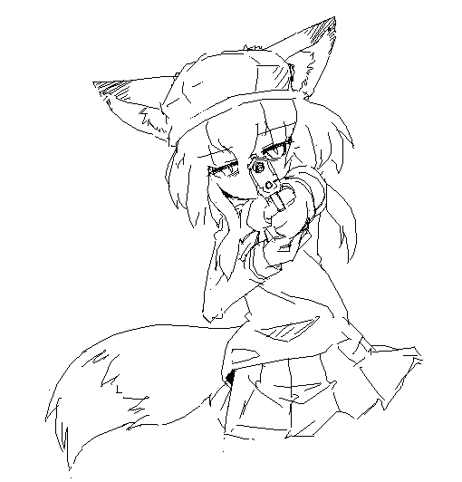
ｼﾞｬｷｯ >> 04/01 01:57 ぱんつ みせて ください な おことわり します >> 03/30 19:53 おひさしぶりです しつもん＆〇〇をあげようのひとです じつはこのごろとてもいそがしく、 ろくにＰＣをつけるヒマも無く、 このサイトにおじゃましたくても できませんでした。(´；ω；`) しかしそのいそがしい時期も おわったので、ひさしぶりに サイトにおじゃまさせていただきました。 これからはちょくちょく顔をだせるとおもいますので、またよろしく おねがいいたします。 挨拶がわりのカニクリームコロッケ１０個奈々さんにわたしておきますね(・ω・)つ三● 長文しつれいしました ではでは 蟹の美味しさがいまいちわからないお年頃 >> 03/30 22:35 ｶﾚｰは正義！ 更新お疲れ様ドス！ 昨日はカレーパスタでした >> 03/29 10:42 まうすりょなげが更新の兆し有りという正夢を見まして。 なんですって >> 03/29 14:25 ご飯をさしあげます・・・どうか撃たないでくださいﾄﾞｹﾞｻﾞｧ わーい >> 03/29 19:46 やはりそろそろ、作品を全部トップページに縦に羅列しておくのはまずい頃合でないかい？ そうだねぇ ちょい一段落したら整理してみるわー >> 03/29 22:36 kyurakyura ﾄﾞｰﾝ >> 03/29 22:36 ドゥアー！！ ｩｧｰ >> 03/28 03:51 ３ボスが楽しみでシカタガナイｗｗｗ 一体どんな死に方をしてくれるのだろうか・・・・。想像しただけでもうイクっっ！！！ とりあえずゆっくりだけど停滞はしてない，がんばるー >> 03/28 21:25 奈々ちゃんすりすり ﾊﾟｧﾝ >> 03/27 23:59 蜂さんはまだですか 次ステージではないでしょうか >> 03/26 11:02 この拍手絵のプラモがほしい そしておかんにすてられる >> 03/26 20:58 みんなのコメ見てて思ったんだけど、 旧作のガスのシステム、あれ流用したら負傷状態とかウイルス感染で咳き込むとかとか出来ないかな んー，なんというか基本動作全部に影響するんでちょい手間が大きいんよね >> 03/25 14:13 (⊃´＾ω＾｀⊂) ⊂(*‘ω‘ *つ) >> 03/25 14:38 ポン・デ・さきつねさん ◯◯◯◯ ◯*‘ω‘ *◯ /◯◯◯◯ uu u u ｶﾞﾌﾞ ﾓﾁｨ >> 03/25 18:28 「しゃがみ」のアクションがあまり好きではありませんか？ しゃがみはともかくとして、攻撃が来る！ と思ったら誰しもとっさに腰を低くして身を守ると思うんだけど。 結構反射的に、攻撃がきたら↓キーを押しちゃうんだよね。 しゃがみはこう，うっかり攻撃が一切当たらなくなる敵が出てきたりするんで… >> 03/25 20:20 イッテルビウム アヘアヘイッテルビウム >> 03/24 03:48 きつねさんに三欲あるのか確かめる為に観察した結果、食欲：睡眠欲：性欲の割合が９：１：０になりそうです。助けてください。 ﾓｸﾞﾓｸﾞ >> 03/24 05:55 涼子さん!一緒にアフターバーナーとスペースハリアーとアウトランやろうぜ!! 確かにレトロゲー好きそう >> 03/24 18:51 このサイトは右の方にぐにゅーんと長いけど 下のスクロールバーを右まで持って行って 下までスクロールすると… 改行わすれてたねー >> 03/23 00:08 好みに合ったブラウザ見つかったみたいですね よかったよかった うむ >> 03/23 00:09 |'ω'|三|'ω'|三|'ω'|(*‘ω‘ ≡‘ω‘ *)|'ω'|三|'ω'|三|'ω'| ≡(*‘ω‘ *)≡ 合体！ >> 03/21 16:38 最近人気度でななさんと有機酸に押され気味のりょこさんですがぼくはすきです。 あ、あと幽紀さんはもらっていきますね にとおうものはー >> 03/21 16:50 一瞬の内に致命傷を受けちゃったけど状況をよく理解できないまま２，３歩ふらついた後にひざから崩れてそのあとﾋﾞｸﾝﾋﾞｸﾝ痙攣するのなんて素敵じゃないですか？ないですか？ ｲｲﾈ 通常死モーションに入れてもいい >> 03/21 17:38 >>虫…虫ねぇ…（ﾁﾗｯ >うむ 期待してもいいのかい！？ うむ >> 03/20 15:26 邪鬼眼 飛影はそんなこという >> 03/20 18:52 柱|ω・’)ﾁﾗｯ 柱|ﾐ ｼｭﾊﾞｯ (*‘｜柱｜ω‘ *) >> 03/20 23:50 天崎姉妹と幽紀さんはペットを飼っていますか？ どうだろう，有機酸はなんか飼ってそう >> 03/19 00:20 幽紀さんの圧死ボイスで割れているボイスを確認しました。 最初「バグかな？」と思ってStage１のボスの圧死攻撃（胴体挟み込みと頭部挟み込み）を各十回当てたところ、全てで圧死から１１秒のところのボイスが割れてました。 報告ありがとう >> 03/19 00:30 幽紀さんのボイス割れを検証した者です。 オワタ式プレイをしていたときに面白いことを発見したのでｗ λさんの飲み込みは空中でも当たる事がわかりました。 （奈々さんで１５回ほど検証、いずれも空中ジャンプ中に飲み込まれた） byドM プレイヤー うむ，彼の衝突判定は大きい >> 03/19 01:50 おはにちばんわー。 最近スライムとか細い生物見ると、スライムは覆いかぶさってありとあらゆるところから侵入してもにゅもにゅ・・・。とか細くて長い生物はやっぱり締め上げて口から侵入して体内から支配してもにょもにょ・・・とか考えてしまう。あっ、引きずり込まれるのもいいよね！ 何はともあれ、お体に気を付けてくださいませ。うふふ・・・。 がんばるよー >> 03/19 01:54 な・・・なんだい。俺はただ驚かそうとしただけであって、おさわりしようとか、もふもふしようとか、セクハラじみたことをしようとした訳ではｯ!・・・あふん。そんな目で見られると・・・///(ｶﾞｸｯ ﾊﾟｧﾝ >> 03/19 12:52 その銃で僕のラブハートを打ち抜いてvvv あと帽子には狐耳用に穴が開いていたりとか？ （゜ω ゜） 開いてたり >> 03/19 13:44 よ、要求は何だ！？ご飯か？ その低角度からの撮影を止めなさい >> 03/19 23:43 そろそろ更新されないかな～(チラチラッ ﾁﾝﾁﾗ >> 03/18 06:27 Vore please wait for stage4 >> 03/18 13:27 ... ...(*‘ω‘ *) >> 03/18 13:48 拍手絵を見たいが為にたくさん送ってしまった。 それはそうとリョナ趣味を持っている人がまわりにいなくてさみしい。 まぁそりゃその趣味の人が多くても困る… >> 03/18 17:17 CrackleCradleエロシーン希望 (*‘ω‘ *) ざんねん！ >> 03/18 20:03 （生*物'スωテ'ー*ジ*ま'だωか'な*～） あとお疲れ様です まってよう >> 03/18 21:00 ＢＢの旧2版が落とせないんですが何故でしょうか。消してしまったんですか。 いいえ 重かっただけかと 今はアップローダが消滅したので事実無い どっかにあげてもいいけど >> 03/18 21:01 この殺気 やはりチロル一個では不服だったか・・・ じつはさきつねさんではない >> 03/17 01:45 有機酸のリョナゲバトロワのやつみたいなキャラ設定がみたいのですがどうでしょうか。 実のとこ設定決まってない >> 03/17 02:56 CC３人娘のエリョナかさきつねさんをよこせ！！ さもないとこのごはんがどうなってもいいのか！ 武力で勝てるとでも >> 03/17 07:17 ... (*‘ω‘ *)...？ >> 03/17 10:03 今ccの溶鉱炉のボスに行けないのは使用？ うむ もうちょいまって >> 03/17 11:39 銃を構えるきつねさんかっこいい そういえばきつねさんとCCの3人は 戦闘力高いけど、一般人に遅れをとる ような弱点とか状況ってないものですかね？ あ、此処にあるCG集はすべてもらっていきましたよ。 ありがとー んー，涼子さん幽紀さんはわりと機動力重視な人だし両手両足くくればいけるか 手足どっちかが自由に動くならかなりつよい >> 03/17 18:47 ドゥアー ｧｩｩ >> 03/17 19:30 ｷｭﾗ(*‘ω‘ *)ｷｭﾗ (*‘ω‘ *)))) >> 03/17 20:19 お菓子の写真で住所特定した …かった(願望) もし特定できたら、お前さんの家に行って有機酸を縛り上げてプリンを口に押し込んだあとあと、奈々さんと涼子さんお持ち帰りしたいのぅ… …うへへへへへへへへ へっ…奈々さんも涼子さん可愛いお… …あ、勿論さきさんも可愛いよ？、うん だが有機酸、てめぇは駄目だ お布団の刑に処す 新幹線の中なのでむりですね(*‘ω‘ *) 布団の刑…なんて残酷な >> 03/17 22:06 さきつねさんと一緒にお風呂入って髪の毛や尻尾をわしゃわしゃしてたら口をへの字にしてむーって怒る姿がかわいいと思うな こんな想像でカレー5杯は楽勝だぜええええええええええ！ あまり触らせようとはしない >> 03/17 22:39 銃なんて捨ててかかってこいよ！ ダガーを持ち出しますがよろしいですか >> 03/17 23:28 何人も殺っている者の目だ・・・・・・・・(゜o゜) さきつねさんは、どれほどの修羅場を潜り抜ているのだろうか・・・・・・・。 じつはさきつねさんとは別の子 >> 03/17 23:35 さきつねさん、銃が似会うなぁ(笑)。銃を よし！応戦だ！！相手になってやる！！！(^^♪ 実は（ >> 03/17 23:42 さきつねさん、突然ですが一つ質問があります。(笑) 奈々さんの銃って、何ですか？ (・・? シグ？ ベレッタ？ グロック？ ミネベア？ ワルサー？ 実在するかもあやしい 決まってもない でも装弾数見てる感じ結構強めの銃なのでは >> 03/17 23:42 アッー！ ｪｯ >> 03/16 01:25 ganxie (*‘ω‘ *)？ >> 03/16 01:37 ふふ・・・だが既に俺の股間の銃がお前に向けられているのを忘れたわけではあるまい？ そのデリンジャーがどうかしましたか >> 03/16 01:50 なるほどこれがベレッタか。 さきつねさんにも取り回しやすいいいハンドガン！ でもソーコムのほうが好きなんよ・・・ ソーコムは某潜入ゲーで知名度をあげたよね >> 03/16 01:51 拍手したら飛び上がるさきつねさん出てきて不覚にも笑ってしまったｗｗｗ コーヒー返してｗあとキーボードがべたべたあｗｗ ﾊﾞｼｭｳｳｳｳｳｳ >> 03/16 02:21 メタルスラッグはご存知ですよね？ あれのボスに、塔を噛み砕きながら上って機械のボスがいるんですが、 あれみたいな、逃げつつ闘うタイプのボスが私は好きです。 まぁBBのラスボスもそのひとつですね。 メタルスラッグはPAUSE機能さえあれば完璧だった。 BBラスボスはなかなか賛否両論であった >> 03/16 11:43 更新ッ！ サキツネロケットｗ はっしゃー 燃料はご飯 >> 03/16 11:43 さらにタンクだと・・・ｗ 陸空の戦力は完備 >> 03/16 11:45 ＞ジャージ穿くのすらめんどくさがるんですね そしてパンイチで歩きまわる ｺﾞｸﾘ・・・。 そしてオフの日に天崎姉妹が押し掛けるてすと どのくらいの仲なのだろうか >> 03/16 12:14 今思えば拍手一つ一つに返信て結構大変やね スルーする人も多い中 更新内容の1/3はこれだったりして あながち間違いではない でも反応って制作のモチベ維持には大事なのよ… 最近ゲームの更新が少ないのは反省している >> 03/16 13:42 冬虫夏草というきのこをご存知ですか？ 虫に寄生して成長するきのこなんですが 寄生された虫のほうはたいていある程度元の外見を維持していることが多いんですが 中身はというと、菌糸でびっしり覆われていて内臓なんかは全部なくなっているらしいですね。 涼子さんにもそうした感じで、いつの間にか内臓溶かされたり食われたりして死んでる系の死に方をして欲しいと思います。 溶けた内臓やら体液の類が口やらの穴からどろどろ出てくるのもいいかも。 手遅れ系シチュはゲームで実現するのはなかなかむずいけど嫌いじゃない >> 03/16 14:32 ＞ｼﾞｬｷｯ 何？ 俺のマグナムと勝負しようってのかい？ そのデリンジャーがどうかしましたか >> 03/16 14:56 涼子さんが急に動かなくなったと思ったら突然 背中や頭がぶしぶし裂けて寄生体が飛び出してくるというのもいいですね。 苦しむのでなく、気が付いたら手遅れで無表情のままって感じがGOODです。 ゲームには入れにくいけど（ｒｙ >> 03/16 19:48 クレーンで敵がつかまってスクラップにならないかなー と、お遊び要素を提案してみる ちょっと考えたけど他の実装をゆうせんした >> 03/16 19:56 拍手絵初めて見れたー(｀･ω･´) ｼｬｷｰﾝ 奈々さんたちが謎のガスを吸う 眠ってしまう 目が覚めたら尻尾と獣耳が それぞれ何の動物が似合うかなー 狐は当然として 有機酸はシャム猫っぽい >> 03/16 20:31 いきなりだけど、奈々さん貰っていきますね。っと ﾊﾟｧﾝ >> 03/16 22:23 http://www.nicovideo.jp/watch/sm16643477 とかのコラボってどうお考えでしょうか？ さきさんは流石にアーマードコアはご存じなさそうですが。 AC結構すきよ あとその動画はむしろお気に入り >> 03/16 22:23 あと、拍手絵がかわいいです わーい >> 03/16 22:23 キュラキュラ どらきゅら >> 03/16 23:59 幽紀さんのショットガンダブルトリガー いっそ公式に >> 03/16 23:59 (σ・ω・)σ (σ*‘ω‘ *)σ >> 03/15 00:35 これは……おやつの油揚げを勝手に食べられた時の目！ おやつにあぶらげはちょっと重い気もする >> 03/15 11:20 サキタンク……良いね！ あと、さきさんは一か月以上開けて更新をしないということが分かった。やったね！ そして暇潰しに書いた小説でも送ってみる。 byハクビャクゴウ うい >> 03/15 11:30 とある姉妹の日常日誌。 第一話：涼子さんが銃を貰うお話。 ～天崎家～ 涼子「あ、居た」 奈々「あれ、お姉……姉さんどうしたの」 涼子「ちょいと銃について質問が有ったりね」 奈々「……珍しいね、姉さんが銃に興味持つなんてさ」 涼子「んー、私ってナイフとか使ってるでしょ？」 奈々「まあ……」 涼子「いやまあ刀とかもう一本ダガーが見つかって、手榴弾とかもゲットしたけどね？」 奈々「ええっと……ああ、うん。有ったね。私はショットガンと機関銃を拾ったんだっけ」 涼子「……やー、最初に箱の中身見た時は驚いたよ？ 結構頑張って虫みたいなロボット倒して上に行ったら宝箱が有ってさ？ で、宝箱を開けたらバラッバラなパーツっぽいのが有ったからねー……。 また外れかーなんて思ったらいきなり奈々ちゃんがカチャカチャやって組み立てたらあら不思議デスヨ？」 奈々「なんだろう、このそこはかとない説明セリフ感」 涼子「……っと、本題に戻ろう」 奈々「…………」 涼子「まあそんな訳で手榴弾はゲットしたけど『あれ、私って遠距離攻撃無くね？』って思ってさ……」 奈々「あれ、でも姉さん手榴弾で色々倒してたよね？ 壁に反射させて当てたり、爆発時間調整したりさ……。 別に、銃が無くたって……」 涼子「いやまあそりゃね？ 一撃の爆発力は凄いけど、普段はあんなに持ち歩けないし、外した時とか自爆時のダメージが……ねえ？ だったら手榴弾の数を犠牲にしても銃を持ち歩いたほうがよっぽど建設的でしょ？」 奈々「待った。銃を持ち歩く気？」 涼子「んー、さすがに小型の銃が有るならって感じだけど……ああ、勿論ナイフは持ち歩くけどね」 奈々「…………立派な駄目人間って言うかさ……なんか、もう……」 涼子「奈々ちゃんだって護身用に何か持ってるくせにー」 奈々「…………私のは、その。……鋏だから、法律的にはセーフだから……ね？」 涼子「人道的にはー…………ねえ？」 奈々「……で、遠距離攻撃に乏しいと思ったから何か良い銃がないかどうか聞きに来たの？」 涼子「あ、逃げた。……まあ要約するとそんな感じ」 奈々「逃げてない。……で、どんな銃が良いの？」 涼子「どん >> 03/15 11:34 涼子「どんな……って？」 奈々「威力が高かったり、装弾数が多かったりとか」 涼子「……ちなみにお勧めは？ 個人的には片手で扱えるのが嬉しいかな」 奈々「……なら9mm拳銃かな。反動、少ないし。装弾数は九発」 涼子「ふうん……ちなみに威力が高いのは？」 奈々「まあ、適当なグレネードランチャーとか……あ、ロケットランチャーならRPG-7も良いかな」 涼子「本ッ当に威力重視だねぇ……。……あのさ、デザートイーグルとかは？」 奈々「…………あー……」 涼子「え、凄く強いんじゃ……」 奈々「えー。最強のハンドガンの一撃で漸くアサルトライフルの一発に届くかもしれない程度の威力。」 涼子「…………。」 奈々「……ちなみに、反動も撃ち方を守れば小学生の女の子でもなんとかなるレベル。」 涼子「………………。」 奈々「……まあ、とりあえず9㎜拳銃で。取り寄せやすいし」 涼子「あ、うん。お願い」 痕餓鬼 まさかの二枚目。 第一話とは言ったが第二話があるかどうかは不明ッ！ あるなら幽紀さんを出したいなッ！ ……まあ、こんな感じでほのぼの系を書きたいですよ。 ※デザートイーグル関連について。 嘘は言っていないつもりです！ きっと嘘じゃあないッ！ >> 03/15 11:37 おうふ。 日常日誌でbyハクビャクゴウ書くのを忘れてた……。 連投失礼しました。 では、最後にご飯をあｇ……え、ちょっ、ご飯は私じゃな「うまー」ぬわー!! ｂｙハクビャクゴウ ぬまー >> 03/15 17:12 そういえば、尻尾で右クリックをしたら黒玉(当たり判定有)が出るけど、左クリックの湯気っぽいのは何なのか気になるのですよ。 byハクビャクゴウ あれは息切れエフェクトのテスト >> 03/15 23:01 この狐っ娘のかぶってる帽子の形状が 非常に気になります。 キャスケットに穴が開いてます >> 03/14 23:02 プリッツのたこ焼き味を食べた、 若干不味そうだったけど味は普通のたこ焼きスナックだった サキさんもいかが? そんなのあるのかー お好み焼味とたこ焼き味があったら区別つかなさそう >> 03/14 23:22 なでなで (*‘ω‘ *)もちょっとみぎ なでなで (*-ω- *)そのままで なでなで (*-ω- *)んふー とか考えてて夜が更ける んふー >> 03/14 23:23 キャタピラかわいい…！ ｷｭﾗｷｭﾗｷｭﾗｷｭﾗ >> 03/14 23:24 さきつね火を噴きどこへ行く……… おたくの冷蔵庫まで >> 03/14 23:25 ドゥアー ﾄﾞｱｰ >> 03/14 23:25 拍手絵につっこみしてたら本題入れない うむ >> 03/14 23:26 さきつね沈黙のごはん 静かで…孤独で… >> 03/14 23:45 言うの忘れてましたが小説送りました 鹿です はーい >> 03/14 23:45 これはもしや桝田沙紀さん！？ けど帽子かぶったサキツネさんの可能性も…… あってる -----2012/03/14----- 徐々におしよせるいそがしさのなみ 先日諸用で遠出したので丸呑みで有名なCamelさんにあってきました． ちょいとお茶してきたのであった．さらにはおみやげも持たせてくれた！餌付けなう！ 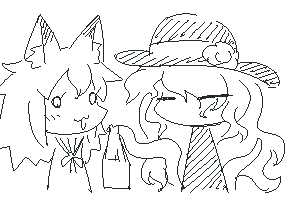 うまかった(*‘ω‘ *) 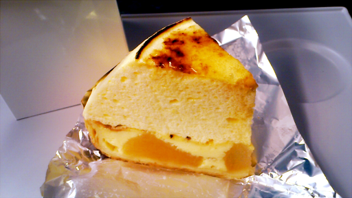
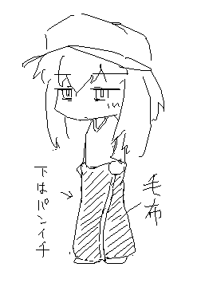
意外とあたたかい >> 03/14 06:56 今日、久しぶりに時間あったからプレイしたよ。 楽しかったよ。ありがとう！ ただ、涼子好きだから途中から涼子でやったら難易度上がりすぎwww燃やされたり串刺し(どちらも×２)になったり… あとそだ。首ちょんすると涼子さんの顔がでかくなってる気がするのは気のせい？ あと、3-4かな？上ルートまでジャンプ届かないけど…どうやんの？ 奈々さんだととどかん 他の二人は届く >> 03/14 10:53 アップルのかじられてる部分にさきつねが見えてくる 重度のさきつね病にかかってしまった。 病室はここであってますか welcome >> 03/14 14:41 更新まだかな？ おはよう >> 03/14 18:41 ホワイトデーなので油揚げ内臓チョコをお返ししましょう あとごはんもどうぞ にがい >> 03/14 20:05 ケモ属性なかった俺ですが、きつねさんのせいで目覚めそうです。 慰謝料代わりに奈々さんをいただきます。 なんだと >> 03/14 20:51 本日更新されると聞いて！ ラスト１ゲトーー(*'ω'*)ーー？ おめ >> 03/14 21:38 homeボタンが無いウチのパソコンは詰んだら詰みっぱなし。 ここはいなり寿司でどうにかしてくだせぇ。 Fnキーとかもないんかしら >> 03/13 21:20 3月に入ってもまだ暖房器具が手放せない 虫はちらほら見かけるようになったけれど 虫…虫ねぇ…（ﾁﾗｯ うむ >> 03/12 01:41 定期age 定期券 >> 03/12 01:41 とみせかけてage sage >> 03/12 01:41 ほらほら狐さんの大好きなageだよ abura >> 03/12 08:18 先生! 涼子さん・奈々さん・幽紀さん この中で格闘ゲームが一番強いのって誰なんですか!!!! リアルファイトに持ち込めば涼子さん 技量で言えば奈々さん コンボが入ってしまえば有機酸 >> 03/12 20:11 たぶん有機酸は自宅ではだらしないたいぷ ジャージ穿くのすらめんどくさがるんですね そしてパンイチで歩きまわる >> 03/12 23:17 毎回応援拍手し続けて早数年 早いものよ たまにはお主の手を煩わせるべく返答に困る拍手を送るぞー どうだ参ったかー ふはははははははは (*‘ω‘ *)ﾉ (*‘ω‘ *≡*‘ω‘ *) >> 03/11 17:25 なんとなーく、今日更新されそうな気がした！ あと拍手の画像見れない～ 直した系 >> 03/11 18:59 戦う女性は美しい！ うむ よいもの >> 03/10 07:12 CCの更新した内容の左側にでている日付 20110219 ではなく 20120219 でわ？ あら 直しましょう >> 03/10 13:45 幽紀さんにほんのり中華な印象を得た。 やっちゃいなー >> 03/10 20:42 久しぶりに旧verやってガスまみれにさしたった 妹の代わり？にガスくらって悶えてるリョコたん可愛かったよぅ(*´Д`)ﾊｧﾊｧ きっと発情した姉を見えないところで慰めているのでしょうね(*´д`*) ガスは まぁうん >> 03/10 22:27 前の更新から一ヶ月くらいたつ今頃になると、 そろそろ更新がアルんじゃないかと期待して訪問する方が増えるんじゃないですか？ 案外コンスタント >> 03/09 03:00 ついったーに別に興味は無いんですけども さきさんが色々書いてるのでフォロー（？）とやらしてみたいので そのためだけについったーを始めてみようかとも考えてるけどこれって面白いんです？ このsaki_foxは全部さきさんが書いたものですか？ そうなる >> 03/09 19:20 涼子さんは恐怖におびえるより早く死んでそうなタイプ 窮地になればなるほどテンション上げてきますね >> 03/08 00:22 幽紀さんが赤面してるところをみたいです。 怒らせればあるいは >> 03/06 23:28 涼子さん後でプリンあげるから その胸を揉ませろください プリンでももんでろください >> 03/05 20:44 ダ～イスンス～ン ｽﾝｽﾝｽｰﾝ >> 03/05 21:51 歯車でコリコリされてる間に、クレーンさんが暇だったんでつい涼子さんの頭を掴んでくいくい引っ張って、胴体か首がもげるようにしたい。 ちょいめどい >> 03/04 00:42 今度こそCC更新来そうだ！ 来なかったら奈々ちゃんとデートする キませんでしたがデートもおあずけです >> 03/04 01:16 (*‘ω‘ *) >> 03/04 03:14 きつねさんの三大欲求は、きっと食欲・食欲・食欲 案外三欲ちゃんとある説 >> 03/04 06:35 スマフォでピクシブ見たりするときは初期のブラウザよりファイアーフオックスとかオペラとかお勧めですよそれをつかったらPCのように表示出来ますよ、 ちなみに私はオペラ使ってますが中々使い勝手が自分には向いてました。後さきつねさんに久しぶりに差し入れカレーをぷれぜんつ もうひとつ、涼子さんたまには撫でてみるよしよし operaはoperaでどうもしっくりこんのよね わたしはSleipnirつかってる >> 03/04 10:17 1100000か・・・余裕 ふむ >> 03/04 15:40 幽紀ちゃん、おいで。 歯磨きプレイしてあげよう。 ごしゅごしゅ >> 03/04 16:45 あと996文字ってかくとあと986文字って書くとあと374文字って書くとあと・・・・ (*‘ω‘ *)？ >> 03/04 16:46 うちのパソコンはだめだ イベント見終わるのに30分近くかかった なんてこった >> 03/04 20:53 もうすぐ一か月が経つ…更新間近だな…!! だいたいあってる >> 03/03 01:09 某勇者「リョナなんてどうでもいい！そんなことよりオノニーだ！あひぃいい！」 どういうことなの >> 03/03 20:25 さきつねさんの口にポッキーを次々差し込む簡単なお仕事に就職してぇ 一瞬でも遅れると機械に指を挟まれたライン工のように指ごと噛まれます >> 03/02 00:07 もうなんだかただプレイするのが 申し訳なくなってきただよ あ、ＣＣの3人のエロいの見たいです そんなときはCG集とか買うとこっちに還元されたりする >> 03/02 00:41 どうもサキツネさん。お世話になっております。リョナラー連合ニコニコ動画支部管理人のりんご雨です。 今回は連合にて現在進行中のカルタ企画について要望がございまして、不躾ながらこちらに書かせていただきます。以前カルタの「た」と「わ」をご提出いただきありがとうございました。 非常にクオリティが高い作品で連合一同喜んでおります。ただ、もうひとつサキさんに担当していただけると言っていた、「よ」 余裕見せ 逃がし捕まえ 繰り返し。 の絵札がまだ提出していただけていません。進行状況の方お聞かせねがえないでしょうか？もしお時間がないとのことでしたら、こちらで別の絵師を探そうと思いますので教えていただらと思います。 サキさんCCめっちゃきたいしてます！がんばってくださいね！ 失礼いたします。 連絡したとおりですー ごめんなさいねー >> 03/02 09:55 この前バイトでいった倉庫内に П←こんな感じの機械がありまして、間に段ボールを置いてスイッチを押すとｼｭﾊﾞｱｱｱｯっとすごい勢いでプラスチックバンドをまいてくれるっていうものだったんですが、なんかトラップとして使えそうな感じじゃないですか！？ むずかしそう >> 03/02 16:29 特に事情も無くサイト放置したらごはんぬきよ！ 最近は事情まみれ >> 03/02 22:41 雪振る日にバイク取りにいけず駐車料金がかさむ時に思った。ｶｯﾁﾝｺｯﾁﾝに凍結されるのも良いなーと。 病んでますorz 風邪におきをつけくだしあ 一瞬で凍結は趣味じゃないし長々凍結は入れるところがむずい >> 03/01 00:47 腹パンチ希望! 顔面パンチ希望! 鞭打希望!! 急所攻撃希望!!!! ああああああああああああああああああ 打撃はいいよね >> 03/01 03:14 そういえば、ＢＢでクラゲに捕まった時ふたりともなんて言ってるん？ ふたりとも同じこと言ってる気はするけど…… しらん >> 03/01 03:15 そして拍手絵見れない(´・ω・`) なおした >> 03/01 13:37 んぎい ひぎい >> 03/01 22:04 アニメのグレンラガンを見てて思った・・・。ヨーコの方が涼子さんより露出度高いだと・・・？ 雰囲気似てないでもない >> 02/29 12:54 トップページのfox tailのロゴの白い部分に注目するとスネ夫の顔みたいだね！ 適当に作ったロゴをこんなに長く使うとはおもわなんだ >> 02/29 22:28 サキさんの公式さきつねさん小説があるだとぅ？！ さきつねさんってこんな口調だったのかー。 時と場合による >> 02/29 22:55 女の子の華奢な身体に注入する系の表現って良いよね。 こう 俺の生きた証的なものを。 熱い思い >> 02/29 23:23 天崎姉妹はお宝売った金で結構いい暮らししてそう。 でかい出費は奈々さんの弾薬費くらいだろうし。 姉に刃物収集癖とかあるかもしれんぞ >> 02/28 00:06 毛布の防寒能力は異常。 つうか、この冬掛け布団ださなかったぬわぁ・・・あれ？眩暈が・・・ 暖房はつかってない >> 02/28 17:26 CC製作頑張ってー、でも決して無理だけはするなー！ それで体調崩したら本末転倒だし、マイペースでどうかひとつ 体調っていうかスケジュール的につらいんよー >> 02/28 17:56 bbにもｃｃにもいた首を噛み切る植物がいましたよね？あれ体力が0になってから噛み切るようには出来ませんか？ それまでもがいてるシチュエーションが面白そうなんですけど・・・ ふむぅ 考えとく >> 02/28 21:10 電気毛布が優秀すぎて 朝起きるのが辛い… 電気毛布 それは朝時間になると電気ショックを >> 02/27 05:47 俺は全裸毛布にハマったりしたなぁ・・・ 翌日腹壊したけど 何故か上半身にだけまいてる姿がうかんだ >> 02/27 11:41 これらの作品からリョナゲにはまってしまった。しかし上には上がいるんだなぁ・・・。おそろしい・・・ﾌﾞﾙﾌﾞﾙ ようこそー >> 02/27 12:58 奈々さん!!一緒にガンシューティングやろうぜ!! http://www.nicovideo.jp/watch/sm4571073 多分こんな感じに >> 02/27 15:34 ⊿さんの出演予定はありますか？ あんまりない >> 02/27 22:22 さきさんが描いた涼子さんの絵柄がプリントされた湯のみでお茶を飲みたい あえて内側にプリント >> 02/26 01:20 あ、今気付いたけど 投稿日 21/9 容量.. 21,9 なんだ。 ぐうぜん >> 02/26 10:47 何かこう八頭身のメカスーツ的な超カッコいい的にスタリッシュリョナをかまされる三人とかも見てみたいと 鉄拳とかDorAの動画見てて思った >> 02/26 10:50 以下のメッセージが送信されました。 何かこう八頭身のメカスーツ的な超カッコいい的にスタリッシュリョナをかまされる三人とかも見てみたいと 鉄拳とかDorAの動画見てて思った ×的→◯敵 んー あんま頭いい攻撃は好みじゃないってのはある >> 02/26 21:08 お酒あげる(*‘ω‘ *)っ よいどれ狐 >> 02/26 21:09 辛いペヤングあげる(*‘ω‘ *)っ 食べてみたい >> 02/26 21:45 動きづらくないですか、それ？ 動かないもの >> 02/26 22:11 もふっもふっ（１ダメージ） せいしんこうげき >> 02/25 00:14 わーいクレーンだ― あれはまさに俺のコメために用意してくれたとしか思えないという自意識過剰的思考 米 >> 02/25 10:16 なんで涼子さんは寒そうな格好してるの？ 動き回るので暑いのでは >> 02/25 17:43 帽子被った女の子って可愛いよね！ うむ キャスケとかかわいいよね >> 02/25 17:47 俺の毛布がないと思ったらあなたが持っていたのか んじゃ返してもらうよ こらあ >> 02/25 20:21 ワイヤー内でマガジン入れ替えすると死んじゃうよ！デフォで走るようになったからだろうけど！ 除外しようか悩む >> 02/25 20:27 起きたぜー!→PCやるか→のそのそ→寒ッ→もう少しお布団→ZZZ… 布団…恐ろしい子!! おそろしい >> 02/25 21:55 ふるもっふ地帯 毛布 >> 02/25 21:55 フル毛布地帯 もっふ >> 02/25 21:56 さきつねさんとお風呂一緒に入りたい。髪と尻尾をわしゃわしゃと洗ってあげたいです。 しつこいと怒られる >> 02/24 01:16 いつの間にか3面できてたのでとりあえず一通りクリアするまで我慢しようと思ったら、串刺し＋火炎放射のコンボが素敵すぎて我慢出来なかったよ 火炎は良いね >> 02/24 02:19 近頃は奈々・有機酸の人気が急上昇しているようですが私は涼子さんを応援し続けます。 そうすればいずれ涼子さんにも愛してもらえる気がするんです だが涼子さんはスリルに恋するお年頃 >> 02/24 02:50 奈々ちゃんってやっぱベジタリアン？ なぜやっぱなのだろう >> 02/24 23:27 狐の鳴き声って結構かわいいと言うことをはじめて知った ということはさきつねさんも・・・・！？ がるる >> 02/23 00:56 そういえばたまに話題に出ますがエリョナは好みではないんですかね？ いや、今のCCでも僕は充分いけますけど 好みではないのと そんな唐突にえろえろされても萎えません？ >> 02/23 11:20 3-5のステージで涼子さんで行く→火炎放射、アーチェリーマシンに苦戦→何とか突破→２台目のプレスマシンを突破→真下に消化液がある向こうの足場にはパンチマシン＆爆発マシン→ パンチマシンを攻撃→吹っ飛ばされるor戻るときに爆発食らう→真下に転落「あぁあああぁあ・・・・！」どないしろと(´・ω・｀) いいじゃない >> 02/23 12:58 はじめまして、ぱぴるすといいます。今回は質問というか、お願いというか・・・ＢＢのプレイ動画をニコニコ動画のほうにアップさせていただいてもよろしいでしょうか？ いいよ >> 02/22 00:12 >> 02/15 22:55 ある日僕は散歩をしていて、変な穴を見つけるんだ。その穴の中からは涼子さんの悲鳴が聞こえている。 しかし悲鳴がア゛ッと途切れる。なんだと思ってのぞきこもうとした瞬間、穴の中から涼子さんのパーツが飛んできてほしい。初めに脚が飛んできて血が僕に付着する。 次に手がすがるように僕の足元にまで飛んでくるんです。血がべたりと靴に着いてしまう。そして、割とキレイな状態の頭部が飛んで来てこっちを見てるんだ。なまじきれいだからな眼が怖い。 気持ち悪い、怖い、早く洗わないと血がシミになる。そう思って場を離れようとした途端、涼子さんの胴体だったものが穴から吹きでてきて全身グッチャグチャに汚されたい。そこで気絶したい。 その夜、血やモツが洗いようもないくらいに乾く頃に目を覚ましてお家に帰って朝まで呆然としていたい。 これは秀逸な投稿だよ。ボクが言うんだから間違いない。 ふむ >> 02/22 16:24 チョコもらえなかったのでラブプラスでもやってます。きつねプラスとかどうですか。 ねぷらす >> 02/22 16:24 さきつねさんに電動ドリルに噛みつかせてスイッチオン うおォン ぐるぐるぐる >> 02/22 16:26 その毛布と核弾頭は頂いていくぞ！ ジオン再興のために！ 毛布は渡さない >> 02/22 16:27 さきつねさんにとっての二口ということは最低でも二枚ということですね(*‘ω‘ *)ふとっぱら！ こらー >> 02/22 16:27 ┌(*'ω' *┐)┐)))))) (*‘ω‘ *)！ >> 02/22 21:26 あー。一日布団の中でぐだぐだしていたい したい >> 02/22 21:59 発車します... ｶﾞﾀﾝ...ｺﾞﾄﾝ... 次は銃殺･･･銃殺です ズカーーーン 発車します... ｶﾞﾀﾝ...ｺﾞﾄﾝ... 次は串刺し・・・串刺しです ｶﾁｯ・・・グシュ 発車します... ｶﾞﾀﾝ...ｺﾞﾄﾝ... 次はサンドバック･･･サンドバックです ﾎﾞｺｯ!!ﾒｷｯ!! ﾎﾞｺｯ!!ﾒｷｯ!! 発車します... ｶﾞﾀﾝ...ｺﾞﾄﾝ... 次は電撃・・・電撃です ｸﾁｭ...ﾊﾞﾊﾞﾊﾞﾊﾞﾊﾞﾊﾞﾊﾞﾊ（中略）ﾞﾊﾞﾊﾞ...ｼｭｳｳｳｳ... 発車します... ｶﾞﾀﾝ...ｺﾞﾄﾝ... 次は丸呑み・・・丸呑みです ﾍﾟﾁｬﾍﾟﾁｬﾍﾟﾁｬ...ｺﾞｯｸﾝ・・・ｸﾁｬ...ｸﾁｬ 発車します... ｶﾞﾀﾝ...ｺﾞﾄﾝ... 次は活け造り・・・活け造りです ｷｭｲｲｲｲｲｲﾝﾝﾝﾝﾝ・・・・・・ｽﾞｶﾞｶﾞｶﾞｶﾞｶﾞｶﾞｶﾞｶﾞｶﾞｶﾞ 発車します... ｶﾞﾀﾝ...ｺﾞﾄﾝ... 次は圧殺・・・圧殺です ﾄﾞｽﾝｯ!...ﾒｷｯ...ﾐｼﾐｼ...ｽﾞｼｬ!! 発車します... ｶﾞﾀﾝ...ｺﾞﾄﾝ... 次は挽肉・・・挽肉です ﾐｼｯ...ﾒｷｯ...ﾒｷﾒｷｯ・・・ｺﾞｷｯ...ﾊﾞｷﾊﾞｷ...ｸﾞﾁｬｱｱ!! 発車します... ｶﾞﾀﾝ...ｺﾞﾄﾝ... 次は･･･ 毛布 毛布です ある意味しぬ >> 02/22 23:13 よし6get あとワイヤー怖い ワイヤーはうっかりさんへの戒め >> 02/21 00:24 更新乙 ークラクレラスボスー 汎用人型決戦奈々参号機 NANA-Ⅲ<ナナサン> ７３ >> 02/21 01:25 歯車の左端に立ち、涼子でダッシュすると壁にぶつかり、歯車をすり抜け、歯車の下にダウンします。 その後、歩いて歯車の中央へ向かうと歯車上部へワープし挟まれます。 バグが多くてもちゃんと報告してくれるユーザーがいるってことは バグがあっても報告すらしてもらえないことよりずっと期待されてるということなんだから頑張れや＾＾ がんばるよ >> 02/21 02:16 幽紀さんが狂ったかのようにショットガンを乱射…… ほう？ >> 02/21 08:23 天崎姉妹と東雲幽紀さんが格ゲーに出てみるテスト 暴れまわる！ >> 02/21 11:03 ぱちぱちぱちぱち×1229 10923352 >> 02/21 11:19 動画見ました！ あの最終鬼畜兵器ミンチマシーンが再登場ですか！嬉しいです。(笑) 殺傷力が上がるということは、どんな風になるのか楽しみです(*^^) もうちょっとまってねー >> 02/21 15:07 久々に髪をほどいた涼子さんが見たくなった・・・ ｶﾚｰｳﾏｽ カレー鱒 >> 02/21 21:15 考えたんだが 過去のトップ絵を拍手にしてみたらどうだ？ 種類もそろそろ100くらいになるだろうし毎回違う絵が出るのも面白いんじゃないか 登録すんの大変そうだけど。 大変やね 今回みたいに前触れ無く消えることもあるみたいだし >> 02/21 23:09 ピアノ線をオレンジ色にして。 たくさん配置して。 水平移動させる。 それはなんかレーザー的なもので、触れると細切れにされる。 いい感じじゃね あんまチョンパ系は増やしすぎるつもりもない >> 02/20 00:31 さきつねさんのおかげできつねしっぽにまで目覚めてしまった。 いったいどうなって もふ りょな ｸｽｸｽ >> 02/20 08:24 む！？この真下に敵が潜んでいそうな穴だな……！ 急降下攻撃を使えば―――！ ｼﾞｭｳｩｩｩ…… いなかった（´・ω:;..;...; まれにある >> 02/20 08:34 そういえば、天崎姉妹と幽紀さんは誰かの下で動いてるん？ それとも個人営業？ 個人 >> 02/20 11:33 あ、BBのvsロボット戦で安置(攻撃可)発見。 白い足場に左足、黒い足場に右足を乗せて照準変えずに手榴弾投げてれば勝てる。 まあ、確認してないから分かんないだけで槍かなんか飛んでくるかもしんないけど。 ……まあ、これも有名なんだろうけど。 byハクビャクゴウ ふむ たまに負けうるかもしれんね >> 02/20 15:15 ありがとうといわざるをえない うむ >> 02/20 15:46 ＞>> 02/18 06:53 何もない道かと思ったら落とし穴罠があって、雑魚敵多数にボコられるシチュ ＞そのあたり難しいとこで，抜けられないような穴で死んだらいいけど死ななかったら（雑魚全部倒せたら）どうしようもなくなるし ＞脱出できるようにしたら最初から逃げるし，イベント的にやられるのは私が好かない ならば隅っこにダメージ受ける罠を仕掛けるとか せっかく倒しきったのに自殺しか手が残されてないというシチュもなかなか んーまぁ死因がはっきりしないのももやっとするしー >> 02/20 16:23 その毛布剥ぎ取って私がくるまる 断るというならそのまま俺が 頭を突っ込むということで妥協しよう 即転蓮華 >> 02/20 16:55 プレス機の挟まれ方が色々ある事実に今更気付いて感動した！！ 足バタバタ最高DEATH！！！ 手足だけ見えるシチュはよい >> 02/20 18:03 涼子さんならエアホッケーのパックを粉砕できるはずだ。 よく場外に吹っ飛ばす >> 02/20 19:36 ありゃ？CCにスクリーンショット撮影機能があったのか？ ？ >> 02/20 20:13 サキさんの外出着ですねわかりました つかまっちゃう >> 02/20 21:48 パンイチうへへへｗｗｗｗｗｗｗうへっｗｗｗｗ パンチ一発 >> 02/20 21:49 毛布を取ったとこを見てみたい。 ・・・・・・・・・・えいっ（剥ぐ べりべりべり >> 02/20 22:17 みんなの拍手は3面ボスについてより top絵へのＨＥＮＴＡＩ発言のほうが 多いだろうな そして横長になるページ [・]<拍手は改行しよう！ (0)＜良い子の諸君 >> 02/20 22:30 CC製作記の更新も見てて楽しい 上スクロールステージの超落下攻撃にはロマンを感じる 上下スクロールは素敵ね >> 02/20 23:21 歯車って、上に乗っても回転にあわせて中央へ運ばれたりはしないんだね しようかと思ったけどまぁ労力的にやめた >> 02/19 11:34 最新お疲れです。 今後も期待 ありがとー >> 02/19 11:39 ふぉくしぶ開くとウイルスバスター先生に怒られる なんでじゃろうなー >> 02/19 13:35 あ、本当だ拍手の絵がでてない。 もうちょっと送ってみよう >> 02/19 13:35 二回目もでていないようだ三回目もだめだったら・・・ >> 02/19 13:35 えんだあああああああああああああああああああああああああああああいああああああああああああああああああああああああああああああ 治ったかも >> 02/19 16:58 あ、拍手絵が最近[×]になるの俺だけじゃないんだ。 みたいね >> 02/19 17:15 抜けられないような穴で死んだらいいけど死ななかったら（雑魚全部倒せたら）どうしようもなくなる 打つ手は有る。 たとえば壁の両サイドにいくつか排水溝のような穴があり、そこから半永久的に雑魚が沸くとか。 スライムが適役でしょう。少し穴の構造を変えて追尾爆弾でもいいかもしれません。 面倒かもしれませんがコンベアで運ばれてくる的な演出ならマシン系でも良いでしょう。 まぁ、雑魚ではないけど、深～い縦穴の両サイドにガトリングつけるだけで安全地帯は無くなるしね それでも涼子だけは壁蹴りで逃げられる。さすがです涼子さま。 あれ･･･？ 穴にいつの間にかフタがされて･･･？ 「あぎゃっ･･･！！」 あんま敵が増えるとフリーズする子もでてくる >> 02/19 18:04 見えないといえば、本当に死に様が見えないトラップってのも、ありかなしかでいえばありですよね。 落とし穴に落ちると壁に隠れた場所に落着し、しばらくして断末魔だけが聞こえて、 壁の下に血だけが飛び散ってくる的な演出。 近いところだと、サムスピ零スペシャルの絶命奥義、水邪か腐れ外道あたりですね。 割りと好き >> 02/19 18:28 歯車素敵でした・・・！ 欲を言えば、歯車の下から出てくる物がもっとまっ赤で、一見なにかわからないようなほどグチャってなっていると、もっと美味しいように思います！ ボスも期待せざるをえません！ あんまやり過ぎると変にエグイしねー >> 02/19 19:08 さきつねちゃんの頭にツクシを生けて、春の息吹を感じたい。 ぽやーん >> 02/19 20:18 思えばスーパードンキーコング3は、キャラがキャラならリョナゲーだったのかもしれません。 画面手前に照準が現れ、一定時間おきに射撃されるステージ･･･。 画面下から、ステージをぶった切りながら迫り来るノコギリ･･･。 肉食の魚に食われないよう付近の魚を食わせるステージ･･･。 他にもアクションゲームには参考になるギミックがあるかもしれません。 出来いいよねー >> 02/19 20:20 そういえば溺死はどうです？ 敵のいないプールで浮かぶ涼子さんを眺めていたいです。 溺死はO2ゲージとか用意するのがめんどかった >> 02/19 21:29 更新お疲れ様です！ 北海道は寒い・・・ ｶﾚｰがうまい カレーは何処でも上手い >> 02/19 21:39 3次元をプレスしたら、2次元だ･･･ では、2次元をプレスしたら、どうなるんだろう？ マジレスすると２次元 >> 02/19 21:40 お願いです 誰か、自分自身を微分する方法を教えてください 何で微分するかにもよります >> 02/19 21:55 今回は更新が早い あと催淫ガスは俺も希望！ あとそだ！この前DEAD SPACE２という北米のグロゲーの死亡集見て思いついたんだけど…BBのマウントさんとか出して、腹を集中的に殴ってゲロ吐いて死ぬってどう？ 体力０になっても殴り続けて、しばらくしたら離れてくれるんだけど…その後キャラが四つんばいになって黄色い液体吐いた後、赤い体液吐き出す…みたいなの 少しでも参考になれば… あー悪くないね >> 02/19 22:11 なんか拍手絵が表示されなくなってますが･･･ なおした >> 02/19 22:23 忙しいからこそ更新するのだと過去のさきさんは仰っていました。 うむ だが物理的に時間がなかったりPCを触れないとどーしょもない事もある -----2012/02/19----- 近々更新って言っちゃったし更新(*‘ω‘ *) 声割れはちょっとまだ原因不明 うへへへ 忙しいよぅ
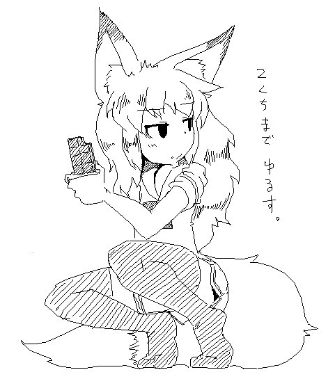
ただし全部食ったら命の保証はない >> 02/19 03:57 ゆるされた ゆるす >> 02/18 00:59 キャラ・幽紀 第一ステージBOSS ハメを発見。 戦闘場に降りたあと二段ジャンプ＋ショットガンで左側に戻れる。 あとは落ちない程度に移動して崖から攻撃するだけの簡単なお仕事です。 byハクビャクゴウ わりと有名 >> 02/18 05:00 丸太が腹を貫く！ ハイテク基地になぜか配備される丸太罠 >> 02/18 06:53 何もない道かと思ったら落とし穴罠があって、雑魚敵多数にボコられるシチュ そのあたり難しいとこで，抜けられないような穴で死んだらいいけど死ななかったら（雑魚全部倒せたら）どうしようもなくなるし 脱出できるようにしたら最初から逃げるし，イベント的にやられるのは私が好かない >> 02/18 18:14 チョコよりさきつねさんが欲しいな 駄目？(*'ω'*) だーめ >> 02/18 19:14 さきさん可愛いよさきさん 一行返信でも毎回返してくれると嬉しいもんですよ、ええ 頑張ってな 頑張るー >> 02/18 19:31 なんか拍手の皆と話題がかみ合わないと思ったらCCが最新版じゃなかったでござる（´・ω・｀） じゃぁ更新したしこの機会に >> 02/17 01:34 バレンタインもそうだが、2月9日の肉の日に大喜びしそうだ、トホホ。 焼き肉行きたいです（食べ放題に限る） 肉は良いもの >> 02/17 09:33 毒ガスも今回いれる予定かのぅ……？ 予定ー 今回はちゃんともがくつもり >> 02/17 15:47 ムニムニ…… なるほど…これが涼子ちゃんのおっぱいか…。 硬いかと思ったら柔らかくて弾力あるのね。 ふぅ…では、逃げるか！？ ｶﾞｼｯ >> 02/17 16:27 最近プレイしていないのだが…今日は書き込みだけ 時間できたらヤラせてもらうぜぃ そいや、催淫ガスってどうなったん？ 個人的にアレが最高だったんだけど… んー あれは手間がかかる上に私の趣味じゃなくてな… >> 02/17 17:53 卒業研究にwikiにある、きつねさんを使わせていただきました。 もし、よろしければアップロードサイトにアップさせていただきます *******@******* どういうこっちゃい(*‘ω‘ *)？ >> 02/17 23:32 血の上手い描き方教えてくだちぃ。 むしろこっちが教えて欲しい >> 02/16 00:43 二口までチョコの封印がとけられた！ ありがたくいただこうと思ったが きつねさんが食い物をわけあたえるなんて こんなの普通じゃ考えられない！ ヒント：ホワイトデー >> 02/16 04:42 ならば残りは俺が口移しで食べさせてあげよう そのまま喰ってしまいましょう >> 02/16 17:58 今後で犬とか出すとかお考えで？ 敵に？ 高機動な敵が少ないからいれてもいいかもっ >> 02/16 18:50 >> 02/01 23:24 奈々さんの抱き枕欲しいなぁ >中に支柱を入れてへし折れるように 材質はペットボトルの周りに綿いれてつくれないかなーというとこまで想像した ペットボトルは丈夫だからなぁ >> 02/16 20:11 奈々さんの股間に電動ドリル突き刺して反応見たい。 電ドリはたぶん痛いだけじゃろ ああだがそれがいいってことか >> 02/16 21:20 はっ！そうか！水辺ってことは水着が拝めるってことじゃないか！なぜ気がつかなかったんだ！ ちなみにさきつねさんは泳げるの？ きつねさんは泳ぐの嫌いだけど早いよ >> 02/16 23:09 天崎姉妹と東雲さんはプライベートで交流はありますか？それともビジネスだけのクールな関係ですか？ 時々あう ゲーセンとかのエアホッケーでムキになって対戦して それを横目にガンシューティングゲーのランキングを奈々さんが書き換える >> 02/15 02:14 つまり欠片を一つだけ残せば大丈夫と言う事か おかえし三倍段 >> 02/15 04:49 今ものっそいエロい夢を見たんで聞いてくれ スライムに体全体に張り付かれてしばらく蹂躙された後一瞬でスライムが消えると同時にボテ腹になるというシチュだったんだが このエリョナを天崎姉妹かさきつねに実行してくれたら、それはとっても嬉しいなって うーん >> 02/15 09:58 >ただし全部食ったら命の保証はない では、キツネさんを頂こうか なんだと >> 02/15 10:12 遅れましたが、誕生日おめでとう御座います。（真） ありがとうございます >> 02/15 10:59 CC最新版やりました。(^^♪ 幽紀さんの断末魔を聞いて気付いたのですが。 彼女の断末魔をよく聞くと「おかあさん！」と言う声が聞こえますね。空耳かもしれませんが。(^^♪ 心にグッときました。良い意味で(*^^)v (ちなみに、聞こえたのはパンチングされるマシンにサンドバッグにされている時です。) あと、断末魔の一つに最期の時に声が割れるという事についてですが、ホラーチックで私は結構好きです。 幽紀さん大好きだぁ。奈々さんと同じくらい。（笑） 割れるのなんでだろなー >> 02/15 11:04 「そのチョコレートを」と明言していない・・・・(；一_一) さきつねさんを二口だけ、いただきます。(性的な意味で。)（＾ｕ＾） にろ >> 02/15 11:42 CCでおへそをいぢめる敵(あるいはトラップ)を出すというのはどうかな？どうかな？ ちょっと範囲が狭いので出し方に工夫が必要そう >> 02/15 12:16 凄い細かいことだけど、ここからゲームDLしたあと Foxtailに戻りにくいのが面倒っちゃ面倒 まぁココはあくまで置き場ですし… >> 02/15 13:16 涼子さんでダッシュ中に壁にぶつかるとダウンするが タイミングよくダッシュ突きをだすとダウンを回避できる小ネタを発見 あと小型爆弾がかわいく見えてきた [・]<ﾋﾟﾋﾟﾋﾟ ダウン回避はまぁスーパーアーマー的なアレで >> 02/15 14:33 歯車さんにヤラレたあと、もっと原型を止めていないのが好きな私は しかしあんまりぐちゃぐちゃになるのも（色々と）表現が難しいのかなぁと考え 歯車の下を何らかで隠すことを提案してみます （すでに金網が設置されていますが中が全く見えないことで想像力をかきたてられる部分も有る）。 シルエットとかいいかも >> 02/15 21:51 涼子さんで壁に向かって突きをやると涼子さんが消えちゃいます。 ご存知、無かったのですか！？ ということは、同じ原理で薄い壁を通り抜けできるのも？ ステージ1のパンチングマシーン格納庫の突き当たりとか。 なおした >> 02/15 22:55 ある日僕は散歩をしていて、変な穴を見つけるんだ。その穴の中からは涼子さんの悲鳴が聞こえている。 しかし悲鳴がア゛ッと途切れる。なんだと思ってのぞきこもうとした瞬間、穴の中から涼子さんのパーツが飛んできてほしい。初めに脚が飛んできて血が僕に付着する。 次に手がすがるように僕の足元にまで飛んでくるんです。血がべたりと靴に着いてしまう。そして、割とキレイな状態の頭部が飛んで来てこっちを見てるんだ。 なまじきれいだからな眼が怖い。気持ち悪い、怖い、早く洗わないと血がシミになる。そう思って場を離れようとした途端、涼子さんの胴体だったものが穴から吹きでてきて全身グッチャグチャに汚されたい。 そこで気絶したい。その夜、血やモツが洗いようもないくらいに乾く頃に目を覚ましてお家に帰って朝まで呆然としていたい。 な～んて考えてたら１時間くらいたっ・ちゃっ・たっ♪ 責任・・・とってよね/// 一時間もたってたんですか >> 02/14 19:07 もらったああああ あげたああああ >> 02/14 19:08 あ、更新おつかれさまです！！！！ どうもー >> 02/14 20:27 しーーーーーらーーーーーーかーーーーーーーー わ！ >> 02/14 21:33 あのサキツネさんから二口ももらえるなんて、感激です！ 食べかけのところﾍﾟﾛﾍﾟﾛ 一ヶ月後をたのしみにまつ >> 02/14 22:18 拍手絵が表示されない…… なんだって >> 02/14 22:19 ではそのチョコを溶かしてホットチョコレートにしてから、一口で飲んでやろう！ 沸騰 >> 02/14 23:21 チョコよりさきつねちゃん食べたい 丸のみ的な意味で あなたたち… >> 02/14 23:58 夢日記帳にあった消えちゃった絵がまた見たいです あー Foxivにでも今度あげとくか -----2012/02/14----- 今年はチーズケーキを作りました ちょいと忙しめでボスが少々先になりそうなので とりあえず報告受けたバグフィックスだけしたのを近々うｐる あとタイムアタックできるようにタイマーつける
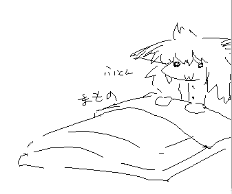
この季節の布団は犯罪的 >> 02/14 02:20 涼子さんで壁に向かって突きをやると涼子さんが消えちゃいます。既出かもしれませんが一応 なんと >> 02/14 13:57 そろそろ更新するころだ… 一応更新はする >> 02/12 00:23 さきつねちゃんは、さきさんの理想の女の子像なの？ そうかもしれないしそうじゃないかもしれない でも実際は食費がかかるからつらい >> 02/12 22:59 そろそろ来るんだろ？あれが！ どれ(*'ω' *) >> 02/11 15:14 がぶぅ！ mogmog >> 02/11 15:14 おいしかったです。 そうか >> 02/10 15:59 きつねさんは一日何キロの餌を食べますか？ 日による >> 02/10 19:59 塩ビフライ 塩ビてんぷら >> 02/10 22:32 さきつねちゃんの髪の毛硬そう わりと指通りはかため >> 02/09 08:52 CC久しぶりにやったらすさまじくよかった 吊り天井いいよね・・・ 追い詰められるのはいいね >> 02/08 00:29 ぴよぴよ（・８・） こけっこ >> 02/08 00:30 Loda.jpが3月末で閉鎖するらしいよ。 大事なものは今のうちにダウンロードしたほうがいいんでないかい？ しってるー いるもんあったかな >> 02/07 01:09 今日の晩飯が「鯖の焼き肉のタレ焼き」だった。サキさん的にはアリなメニュー？ 大いに有りだと思います >> 02/07 02:04 骨のバキボキ折れるのが好きすぎる。両手両腕バッキバキにして生きてるけどゲームオーバーとか希望したい。 悪くはない >> 02/07 22:30 ふとした疑問、奈々さん達は泳げるのだろうか？泳ぐとして服着たままなのか？ でもクラゲ浮いてる、水槽（？）にイソギンチャクみたいのがいる水辺イラネ イラネとかいうなし >> 02/07 23:02 布団には魔物が棲んでいるよね。寝苦しくて目が覚めたら布団の中、腹の上に猫がいた。そのまま寝たけど。 寝返って下敷きになる猫 >> 02/06 08:25 ふとんに喰われるきつねさんをだな…… 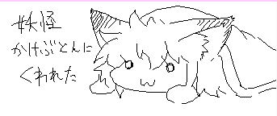 >> 02/06 23:32 奈々ちゃんのエリョナがみたいよう･･･ふぇぇぇぇ・････ 自分で描きなっ >> 02/05 11:58 よんでますよサキツネさん あざぜー >> 02/05 14:49 ロックマン的に下から溶岩が、とか上から棘が、とか後ろから口が、とか面白いかもしれない。 あ，そういうのはやるつもり >> 02/05 20:38 実は私、今回からCrackleCradleに出演しているのですよ・・・ stage3-4のプレス機に実は人型の穴が空いていて、その中に潜んでいます。 グェヘヘへへへへｗｗｗｗ 誰か早く来ないかなｗｗｗ by病気の人 そうか，なにいってんだお前 >> 02/05 22:02 ここのWeb拍手、ケータイからだと表示されなくて、 Web拍手そのものがケータイに非対応なのかなと思ったら 他のサイトではちゃんと使えるみたいなんですよね。 いやまぁ、出先でまでリョナゲーの更新に期待している自分もどうかとは思ったんですけどもね。 外出先でCCに関するネタを思いついたときとかも、あらぁな。 ふむ >> 02/05 23:25 小説送ってみました 時期モノです 夜あたり載せておくー >> 02/04 04:58 3-4 歯車がある所 涼子さんの速度なら走って抜けるの余裕余裕→地面のトラップ→クレーンキャッチ→ｺﾞﾘｺﾞﾘｺﾞﾘｺﾞﾘ よくある >> 02/04 16:24 lol ｗｗｗ >> 02/04 21:05 久々にRYSTGやってみたら面白い面白いｗリメイクの予定はありませんか？ 久しぶりにやると，えらい気合入ってんな自分と感じることはある >> 02/04 23:36 桝田沙紀の設定について語ってください！ 背が低い ダガーで戦ったりすることもある >> 02/03 00:16 今までFoxivの方を見過ごしていました・・・！とりあえず武闘派巫女さんかわいいです。あと対戦相手の巫女さん達もかわいいのでもっとシリーズ化きぼｎ 巫女さんかわいい >> 02/03 14:25 生物ステージ…出産系のアレも期待していいんですかねぇ？ 研究員めいた女が倒れていて、近づくと悲鳴と共にパンパンに膨れた腹が破裂して虫が飛び出すってのも有りだと思った。 どうなるだろぬー >> 02/03 16:22 わしゃわしゃ ガシッ ｺﾞｷｯ ｶﾞｯｼﾎﾞｶｯ >> 02/03 20:50 涼子さんが銃を使えるんすね。 個人的には単発リロードのバズーカ砲を振り回してるイメージが そういう方が好きそうではある >> 02/03 21:42 豆と恵方巻きあげるから出ておいでー 略して豆まき >> 02/01 21:42 ゴン、おまいだったのか・・・ いつもThis way… >> 02/01 23:24 奈々さんの抱き枕欲しいなぁ 中に支柱を入れてへし折れるように >> 01/31 01:52 新しい罠すごくいいわぁ・・・。音声ありだと余計に興奮しますっ(*´д｀*) いいよね >> 01/31 09:05 さきさん今日誕生日なん？ おめでとうといわざるをえあに うむ >> 01/31 10:29 えんだあああああああああああああああああああ いやあああああああああああああああああああああ >> 01/31 15:06 (*‘ω‘ *) オタンジョウビオメデトー ありがおー >> 01/31 17:35 はーぴばーすでーサーキー。プレゼントにCC製作記Part6を投稿する権利をやろう エナジーボンボン食ってろ >> 01/31 22:32 虫歯になった。 歯医者に行った。 歯の治療って機械系リョナだよね。 俺は何を考えてるんだろう？ 現実逃避 >> 01/30 05:25 CrackleCradle製作記Part.6はまだですか(・ω・)？ あーちょいまってー >> 01/30 09:49 Hello Hi >> 01/30 21:51 われらは待つガワの人間ですが、ただ待つだけでは 更新などがさきさんのモチベーションと時間だけが頼りになってしまう。 しかし作成のお手伝いができるわけでもなく ご飯や製作資金を送ることもままならない。 そんなわれらに残された手段は拍手だけなのです。 10連打します。 CG集買ってくれてもいいのよ >> 01/30 23:22 エリア選択で３－ＭＯＶＩＥを選択するとキャラにかかわらず、 ２ｄａｙｓ ａｇｏのあとにいきなり幽紀さんが出てくる。（涼子さんが金庫に向かって走り出す部分が抜けてる） ３－１から入ったときは普通だった。 まぁだから何だって話ですが。既出だったらすみません。 あら確認しておきましょう >> 01/29 01:19 アローキーとHOMEやPAGE UPなどが、一緒になっているようなパソコンだと、 チートの操作を受け付けないみたいです。 たぶんアローキーが優先されてるのではないかと思います。（私は素人なので分かりません） たぶんFnキーでなんとかなる >> 01/29 01:36 きつねさんがすきです、でもりょなはもっとすきです。 わるくない >> 01/29 03:56 バイハザの最新作バイオリベ超面白いよ！面白すぎてぬこ強姦している暇なんか無い！ そうか >> 01/28 01:02 炬燵・湯たんぽ・湯船「我々の中で一番の小ｒｙ」 毛布さんディスってんじゃねぇぞ >> 01/28 01:04 Nice work on the spike trap. But the Z order of the spike should be between the legs, not behind. I see. I will fix the problem in next update. >> 01/28 19:51 いつも更新を楽しみにしています。 ステージセレクトで1-1から左を押すとエラーが出ましたの報告させて頂きます。 （ログが必要なエラーでも無いとは思いますが、一応以下エラーログ） ___________________________________________ ERROR in action number 1 of Draw Event for object objTitle: Error in code at line 38: draw_text_transformed_color(menu_x+33,menu_y+3,StageName[Stage],0.35,0.35,0,COLOR_DARK_BLOOD,COLOR_DARK_BLOOD,COLOR_DARK_BLOOD,COLOR_DARK_BLOOD,1); ^ at position 57: Unknown variable StageName or array index out of bounds あ，しまった，修正しますー >> 01/28 21:25 stage3-4(3-5?)でHomeキーにより上に行き過ぎると、魔女の結界に閉じ込められますｗ 死ぬ事も許されず、永久に橙色の背景の中を彷徨い続けることになった私のソウルジェムは真っ黒です･･･ p.s 画面拡大が出来なくなったのは仕様でしょうか？ 厳密には出来ますが、拡大した分だけ、その部分が黒くなります。 ああたしかに 直しておきましょう >> 01/27 13:51 いまの政治体制について、さきつねさんの一言をどうぞ ご飯が食べられればよいです >> 01/27 14:53 >この季節の布団は犯罪的 添い寝♂しましょうか？（笑） お前は何を言ってるんだ >> 01/27 18:25 この時期風邪が流行ってますね ｨｯｸｼ! まもの ｨｯｸｼ! まもの サキさんも気をつけて下さい インフルエンザさんが猛威を振るっていますね >> 01/27 20:58 CCにて髪が解けた状態で首ちょんされるとまた束ねちゃうのが残念。髪ほどけた幽紀さんマジ天使 あーたしかに >> 01/27 22:33 stage3はどう見てもハンバーグ工場・・・ 絶望 >> 01/27 23:44 そういえばＣＣのプレイ動画にＡＣの声入れてるＭＡＤ動画が上がってたよ あれいいよね >> 01/26 06:52 頭だけ挟まれるの好き BGMもいい仕事してる ｷﾞﾘｷﾞﾘｷﾞﾘ >> 01/26 22:03 BBやCCにも、 「このゲームには出血や暴力表現が含まれて居ます。」 みたいな注意書きをタイトルの前に挟んだほうが良いのではないでしょうか？ いやまぁ正しくダウンロードしていれば必ずこのサイトの 入り口を通るはずだしその注意書きにさえ従っていれば いちいちゲームで注意することもないのかもしれませんが 念には念をということもありますし・・・ んーまぁ一応ここ以外では落とさないって前提だけど… CCには入れておきましょうかね >> 01/26 22:11 KONG？ むしろONG！！ おにぎり！ >> 01/26 22:57 さきさんは、あまりまんこに魅力を感じないタイプなのか～ 孕ませも今後望みが薄そうだし・・・ あんまなぁ >> 01/25 00:47 おでんでんででん おでんでんででん 「I'll be back」な奈々ちゃんもかわいい キツネーター >> 01/25 00:47 ついでに一言なんてない そうか >> 01/25 02:15 ふとん＜中でじわじわと嬲り吸い取ってくれよう 力をすわれる >> 01/25 03:30 涼子ちゃん、おいで。 おっぱい揉み揉みしてあげよう。 ｻｸｯ >> 01/25 05:37 2012/01/21更新 CrackleCradle 3-4公開 ←２５日の段階でまだ公開されてない・・・・(´・ω・｀) どういうことなの >> 01/25 08:30 布団という魔物の他にも 一度入ったら抜け出せない KOTATUという悪魔が居るそうだ（炬燵布団から頭を出しながら） MOUHUにも気をつけろ >> 01/25 14:45 EXステージ的なものでも良いから三者三様のダンジョンとか面白そうだなぁ……。 byハクビャクゴウ んーまぁ考えとく >> 01/25 14:48 奈々.zip 涼子.zip 幽紀.zip >> 01/25 14:49 キツネ.zip .exe >> 01/25 17:01 奈々たんを“ぺたんこ”にして溶鉱炉で焼き上げた御煎餅を作ったのに誰も食べてくれませんでした・・・ 仕方ないので、粉砕機へ廃棄しました。 食人の趣味はございません >> 01/25 17:02 フィア(C3)にあげていたら、私は穿孔機で貫かれて♂ここにはいませんｗ 日本語でおｋ >> 01/25 22:16 BBの時ののーかんモンスターみたいに手天井に隠れてて下を通るといきなり首に巻きついて吊り上げる設置型の敵なんてどうでしょうか！ なんかFPSにいたよね >> 01/25 23:15 +猫で外界とのＡＴフィールド全開です。 みかんを…食ってる！ >> 01/24 07:16 奈々さんの下腹部にストロー的なモノを突き刺して ちゅーちゅーする系生物とかいいなあ んー まぁそのあたりは気分しだい >> 01/24 16:40 ついでに一言あればどうぞ(拍手だけでも送れます) あと967文字 ひとこと >> 01/24 19:24 上半身のプレスで、完全に潰された後、足が垂れずに上の方にピンと張りっ放しな件について 可笑しくて笑えましたが（ﾟ∀ﾟ） 仕様(*'ω' *) >> 01/24 21:24 CCの慣性感溢れる挙動を見るに前作のゴーレムのような吊り下げ攻撃が非常に楽しみであります そのあたりも追加したいところだ >> 01/23 00:38 今更だけどあけおめ、そして7、8年使ってたPCがとうとう逝きましたorz 前々からそろそろやばいなとは思っていたけど、今朝点けてみたら画面が変な色になりそのまま… それにしてもタダでもらったパソコンでよく8年ももってくれたものだと思う。 と、いうわけでCCができなくなってしまいました。新しく買える可能性もあるが一か八かだし… そして見事新しく買えた暁には真っ先にCCをDLしに来ると誓います！ それまで自分はこのサイトを一切見ないようにしたいと思います。楽しみを増やす為に。 長文失礼しました。それでは、また会える日まで！ がんばー >> 01/23 00:53 ＞01/12 18:11 「はちゅねミク」にならって、 ＞デフォルメされてないさきつねさんを「さきつね」、 ＞デフォルメされてるさきつねさんを「さきちゅね」と ＞呼ぶのを流行らせたいんだけど難しいかな この書き込みによって俺の脳内に にゃにゃさん というキャラが自動生成されました。 …ほかの二人？ ぶっちゃけ名前がデフォルメ不可（ｒｙ o n a よびにくい >> 01/23 01:11 さきつねよ なぜそのふとんにおれがいることがばれたのだ (*'ω' ≡ 'ω' *) >> 01/23 01:12 布団を大魔王にするためにコタツ機能つけたよ！ そのまま空を飛びましょう >> 01/23 01:14 ああ幽紀さんかわいいよかわいいよかわいいかわうわなにをするやめいやもっとやｔｂｆはｊｆんはえういｊｄｊｆヵふじこ ふじこ >> 01/23 10:01 女でリョナ好きとか押し倒すしかないじゃないか！ びたーん >> 01/23 13:06 奈々さんってはいてない？ はいてる >> 01/23 13:22 歯車にはさまって体のお肉を99％カットするダイエット方法 各地で喜びの声がかき消されています >> 01/23 13:25 どんな新トラップが来ても俺は引っかからんぞ・・・ ｼﾞｭｳｩｩｩｩ ｸﾞｼｬ ﾍﾞｷﾍﾞｷﾍﾞｷ ふぅ・・・ フラグ！ >> 01/23 16:13 120122やったよー 相変わらず幽紀さんの断末魔のひとつがホラービデオみたいに割れててコワイよ 確認しておくー >> 01/23 16:16 2-1の最初で奈々ちゃんが 床に一突きされて血を流しましたとさ。 うへへ >> 01/23 17:58 更新お疲れ様です！ お布団もいいですがｶﾚｰもね！ ｶﾚｰｳﾏｼ 馬！ >> 01/23 19:20 おすすめのゲーム教えてくれてありがとう でもリズム天国はプレイ済みです… すいません。 んじゃー，ラブプラスでもやってなさい >> 01/23 19:23 http://jp.akinator.com/# というサイトでＢＢの姉妹を当てられましたよ 驚きました。 画像はありませんでしたので送ってみてはいかがでしょうか？ うむ，有機酸すらいる >> 01/23 19:28 布団やコタツは本当に危ない… 遅刻へといざなう >> 01/23 20:12 プレス機gj!! 悲鳴をかき消されるのがたまらぬ で、サキさんは俺の嫁でもええんよな？ あとさきつねと奈々さんと涼子さんと幽紀さんは貰っていってもええんでしょ？ やったねたえちゃん！もう私独りぼっち じゃないのね!?もう何も怖くない!! 欲張りめ >> 01/23 21:18 こたつの魔力もスゲーよ マジカルコタツ >> 01/23 21:34 確かにこの時期の布団は犯罪的でありますな。 でもそれよりコメ返しのわしゃわしゃ頭撫でられてる奈々さんの可愛さの方が犯罪的。 私にもなでさせてください。あと抱きつかせてください。 しゃわしゃわ >> 01/23 22:23 おっぱいを揺らすアプリでﾄﾞｩｱｰしてるさきつねさんを揺らしてみた。 ﾄﾞｩｱｰ ﾄﾞｩｱｰ >> 01/23 22:25 ちっちゃいさきつねさんに膝の上に座って欲しい(*‘ω‘ *) そしてわしゃわしゃしたいﾐ*‘ω‘ *ﾐ ﾓｻｧ >> 01/23 22:27 ＞こういうさきつねさんを器の縁にかけておく小物 ｲｲ!!ずっと物欲しそうな顔のさきつねさんに見られながら食べるんですね… そして汁にダイブ >> 01/23 22:27 よく食べ(*‘ω‘ *)よく動き(*‘ω‘ ≡‘ω‘ *)よく眠る(*-ω- *)zzz Zzz >> 01/23 23:03 ディスガイア3をやっているんだが、意外にリョナいし、妄想掻き立てられる内容で予想外の角度からも満足。やってみません？ ふぅむ でも時間掛かりそう >> 01/22 02:26 もふもふさせろー！ ことわる！ >> 01/22 02:51 ちょっと覗いたら3-4更新されてるじゃないですか…！ ありがとうございます、遊んできます。 この時期の布団が幸せすぎて12時間睡眠の日々… うふふ >> 01/22 05:46 布団と言う魔物に全身を取り込まれてしまったきつねさんの図、肉まんあげるから一緒に寝させて ひろがる侵食の輪 >> 01/22 08:22 はっくしゅ ikisi >> 01/22 08:25 ガトリングガンの派生で狙撃タイプの固定銃座の敵なんてどうでしょうか？レーザーサイトを一定時間照射して遮蔽物に身を隠さないとヘッドショットで即死みたいな。 悪くない >> 01/22 08:42 お、ステージ選択が細分化した これは親切設計 うむ >> 01/22 08:50 クレーン地帯で歯車付近の高い所でクレーンの掴み判定にあたると 掴まれずにその場でダウンする模様（奈々さんで確認） 足に当たるから？ どうせならBBのゴーレムの如く足だけ掴んで持ち上げて（ry スカートひっくり返すのめどい＞＜ >> 01/22 08:52 なでなでされてる奈々さんが可愛すぎた まれにある >> 01/22 08:54 あと最後のワイヤーを配置したの誰ですか出てきなさい (*'ω' *)ﾉ >> 01/22 11:57 1getしてしまった… 愛故に!!!!!! だからどこから測って1getなんだってばよ！ >> 01/22 12:18 サキさんの怒ってる姿見てみたいなー と、思いつつ独り占めする大盛りカレーうんめぇぇぇぇえええええ!!!!!!!!! (*'ω' *) >> 01/22 12:32 3-4の最後のほうが難しくて無理なので 溶岩を巨大なプリンにしてください そうすれば焼け死なないでおなかもいっぱいでいいことばかりじゃないか！ 窒息します >> 01/22 12:59 新年早々俺を寝坊させた悪魔じゃねぇかゆるさん ゆるさん まもの >> 01/22 13:28 靴脱げるようになってる！ 歯車もプレス機もツボ うれしい 靴はだいぶ前から脱げるよ！ >> 01/22 13:46 拘束された時に何をどうすればいいか分かりません。 それはそうと涼子さんがかわいい。 ｶﾞﾁｬｶﾞﾁｬしてください >> 01/22 14:44 ＞>> 01/14 22:21 PCスペックがゴミすぎて、CCが重くて動かしづらい。もはや潮時か。 ↑ではないが、私のモバイルノートのメモリーが256MBという超ゴミスペックｗｗｗ XPだが10年以上前の骨董品で御座いますｗ 仕方ないので、大学のPCで遊んでますｗ 心臓に鋼鉄の剛毛が生えた私だから出来る（ｷﾘｯ んーまぁさすがに２５６はXP動かすだけでいっぱいな気がする >> 01/22 14:48 ＞ＨｏｍｅとかＰａｇｅｕｐとかおしてもなにも起こらない！ 貴方のPCはノートじゃなかろうか？･･･ ファンクションキー（多分Fnって書いてある）を押しながらやってみなはれ まれにある >> 01/22 15:00 あけてました ました >> 01/22 15:16 歯車に巻き込まれたときもう少し歯車の回転を早くしたほうが・・・ちょっとかわいそう過ぎます：： まぁそういう趣旨ですし >> 01/22 17:44 CC最高です！ ステージ２の床のトラップ→くしざしは初見でなかなか驚きました。いまではわざとひっかかってます。 軽い提案なのですが、同じように床トラップ→食人植物の流れを想定しているような場所がステージ２の後のほうにありますよね？ あのコンボがいまいち決まりにくいので、床トラップの位置を少しずらすと楽しくなるのではないでしょうか？ 床トラップで吹き飛ばされたところに間伐入れず、植物に捕まるという連携が見てみたいです（＾ヮ＾） 空飛んでる人間をつかむのはちょっとイメージ的に合わなかったので一度着地させた >> 01/22 18:05 １月２１日の３－１がなんかこうやたら親切なバージョンは一体何なんでしょうか？ 皆歩かずに突撃するんだもの… >> 01/22 18:50 条件は分からないけど幽紀さんの声が時々バグる。 気づいてたらスマソ。 うむ 確認しておきます >> 01/22 19:03 しぬとわかっていても歯車に飛び込まないわけにはいかない ごめんななちゃん ｺﾞｷﾞｺﾞｷﾞ >> 01/22 19:13 歯車で64の悪魔城ドラキュラ思い出した あれも良かった いいよね… >> 01/22 19:19 cc来た、これで勝つる→あれ、幽紀さんの声ノイズ交じり？（今ここ） 前からですかね？ ああやっぱ気のせいじゃないか 確認しとく >> 01/22 19:20 今後はコスチュームの追加って行われますか？スク水とかブルマとかそんな感じの。 私の趣味じゃないです >> 01/22 20:06 うおおおおおおお！奈々ちゃんがなでなでされてるう！感謝感謝！ さきつねさんパネェ！ 一生ついていきます(*´ω｀*) 流行らない >> 01/22 21:29 ただなんとなく徒然なるままに、この時点でBB・CC総合のキャラクター人気投票が、もしもあったらベスト5は、どうなるか予想してみた。(一人一票とする。) 一位・・・・・奈々さん 二位・・・・・幽紀さん 三位・・・・・ピアノ線さん 四位・・・・・涼子さん 五位・・・・・鬼畜ミンチマシーンさん こんな順位になりそうな気がする。(^^♪ ちなみに私は奈々さんに一票。(*^^)v ミンチマシーンさんえらい高いな >> 01/22 21:30 「ありがとう 感謝する 」 こちらこそ(^^♪ いえいえどうも >> 01/22 21:37 生物ステージ期待が膨らむっふっふふふふｈっふ うへへー -----2012/01/21----- 更新速度にゃんやんって言うけど２０日だよ！ 月１更新デフォのウチとしてははやいほうだよ！
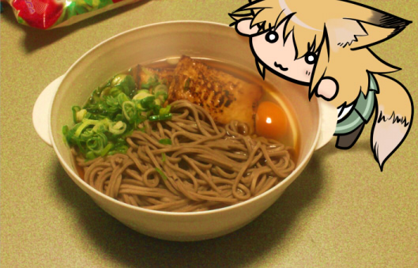
あけでとう >> 01/21 05:18 昔からずっと疑問に思ってたんです…もしかしてサキさんって足フェチなんですか？ iumademonai >> 01/20 13:37 更新間隔があいてるって事はCC大規模更新の予感wktk(笑) うん、気にしないで。ゆっくりやっていこうー(笑) まぁいつも暇というわけじゃないんやで >> 01/19 17:28 今回の更新ペースはﾏﾀｰﾘしてますね （ ・ω・）つ旦~ ちょっと立て込んでましてね >> 01/19 19:25 age >> 01/19 19:26 sage プラマイ0 >> 01/18 20:09 りょなげーで一番知名度高いのって、BB？ハナカンムリ？それとも･･･？ コミュニティによる >> 01/18 21:46 なんか、もっとメッセージ送りたいんだけど 書くことないんだよな～。 なんか更新してくれたらネタも生まれるんだけどな～（チラッ (*‘ω‘ *) >> 01/18 22:04 サキツネさんがお勧めする他サイトのリョナゲ制作しているサイトってありますか？ うーん 基本的にスレ経由でたどれるとこくらいしかしらん >> 01/18 22:33 ccにｂｂのデバックモード(体力が減らないやつ)付ける予定はありませんか？ HOME押せ >> 01/18 23:50 年越しそばに年越しダイブ もったいない >> 01/17 10:19 こんにちは こんにちは >> 01/17 16:33 dwqdwq ﾄﾞヮｸ >> 01/17 16:34 00 >> 01/17 16:34 oo >> 01/17 16:35 458 878 >> 01/17 16:35 01060113 なるほど人類は滅亡する >> 01/16 17:08 ありがとう あとごはんください おことわりします >> 01/16 17:08 以下のメッセージが送信されました。 そうか >> 01/16 17:08 ありがとうといわざるをえない うむ >> 01/16 20:12 ＣＣでもＢＢでもほとんど見かけないですが、首絞めはお嫌いですか。 いや，むしろ好き 生物ステージに期待 >> 01/15 00:49 クラムボンって何？ 個人的な考察では貝類ではないかと >> 01/15 16:48 今思ったんだけど涼子さんって銃使えるの？ 人並み以上くらいには >> 01/14 22:21 PCスペックがゴミすぎて、CCが重くて動かしづらい。もはや潮時か。 すまないさきつねさん。俺はどうやら…ここまでのようだ…。頼む、故郷のお袋に…リョナゲは最高だったと…伝えて、く…れ…。 うーむ．手持ちのモバイルノートですら動くんだが，一体どのくらいのスペックだ… >> 01/14 22:22 まあ、ゲーム動かなくてもさきさんを応援したい気持ちは変わらない。俺は死ぬま応援してるぜ！ きつねさん愛してる きつねはよいもの >> 01/13 01:11 幽紀さんが普通に好きすぎてもうどうすればいいのか分かりません。ショットガン＝カタもスタイリッシュ隙だらけアクションも十字スカートも歩く時覗く太股も金髪アップも不敵系ジト眼もつま先立ち歩きも髪解けもやられるとすぐヘタる表情も意外に可愛い声も何もかもがツボです。これはもう変としか言い様がありません。クラゲにやられて瀕死になってる彼女を助けつつ告白したいです。ていうかしてきます。ステージ２ですね。ふっ、こんな水路の入り口簡単に（ザクッ）アババーーーッ！？ ちょんぱ >> 01/13 14:49 j >> 01/13 14:49 bhinjmoijii >> 01/13 14:50 ＊ なるほど >> 01/13 14:51 クフフ 服 >> 01/13 14:56 とっくにあけてたおめでとうた！ さきつねー！ 俺だ！かじってくれえ！ (・ω（ (*‘ω‘ *) >> 01/13 14:57 とりあえずうちで余ってた餅をあげよう お茶もください >> 01/13 15:00 さきつねさんがおもちを飲んでる間に幽紀さんを家に連れて帰るテスト 贅沢な扱いを要求されます >> 01/13 15:17 幽紀さんはステージの終盤で天崎姉妹がピンチになったとき、 「姉妹を見捨てればお宝を独り占めできるが、姉妹を助けると宝は二度と回収できなくなる」 みたいな選択を迫られ、最終的には宝を諦めて姉妹を助けるデレシーンがあるんですよね？ まぁなんとかすんだろってあっさり去ったりもします >> 01/12 00:57 何故手羽先はこんなに食べにくいのか 骨なし買えばいいの >> 01/12 18:11 「はちゅねミク」にならって、 デフォルメされてないさきつねさんを「さきつね」、 デフォルメされてるさきつねさんを「さきちゅね」と 呼ぶのを流行らせたいんだけど難しいかな まぁ呼び方は自由 >> 01/12 18:35 そういえば、CCのDLのとこの画像のこぎつねちゃんはどこにいったんです？ 撃つとパンパン弾けて面白かったのですけど 今は不可視の敵ジェネレータオブジェクトとして活躍してます >> 01/11 03:46 ハクビャクゴウ >> 10/28 22:44 こう何気なく食らったのが後々響いてきて致命傷になるタイプのシチュエーションなんてどうでしょうか？たとえば毒のような 描写が結構むずいのう って最終ステージ一個前の冒頭に毒を喰らうアニメ入れて、毒ダメージ有りでステージをクリアしたり……。 解毒薬は最終ステージ冒頭か途中で解毒薬ゲットみたいなアニメ入れたりはどうでしょう？ あんまり強制ダメージイベントは好きくないっちゃ好きくない >> 01/11 18:17 生物ステージ来るんですか？ やったーーーー♪ 丸呑みｸﾙーーーー（゜∀゜）ーーーーー!! たぶんくる >> 01/10 21:29 小説できたので、そのうち送ります 帽子猫 >> 01/11 23:33 小説送りました 帽子猫 掲載しました >> 01/10 02:54 ここのリョナ度がちょうどいいです。グロすぎず、軽すぎず、ちょうどいい。 あんまり偏り過ぎもあれよねー >> 01/09 00:13 あけましておめでとうございます。新年ということなので、鏡餅化したきつねさんが餅を食べてる絵をリクエストします。 もちもちしうsぎてややこしい >> 01/09 04:19 奈々ちゃんと幽紀さんでのワイヤー排除の困難さは異常。 幽紀さんはまだ楽だけど奈々が辛いのなんの。 出来ればもう少し判定緩くしてほしいトカ。 fromハクビャクゴウ まぁ一応切らなくてもいけるし >> 01/09 09:37 おけあめよろこと めよろー >> 01/09 20:57 ギミック製作中の画像はえれべーたーですね・・・分かります ちゃんと降りずに、何時までも乗っているから上昇しすぎてこうなる その発想はなかった >> 01/09 21:28 可憐な幽紀さん→俺が操作→可憐（笑）な幽紀さん 可憐！ >> 01/09 23:33 こちらこそありがとうといわざるをえない いえいえ >> 01/08 19:43 なんかさ、こういうさきつねさんを器の縁にかけておく小物とかあったら、いいなと思った。器持って汁飲む時とか邪魔そうだけど。 うっかり汁にIN >> 01/08 19:46 すましいがねおくしろよ！すまいざごうとでめおてしまけあ！！ ねおくしろよ！が命令に見えた >> 01/08 22:11 はくしゅをおごってやろう 腹の足しにならない >> 01/07 00:36 ｷｬｰｻｷｻｰﾝ ｷｬｰｷﾂﾈｻｰﾝ ｷｬｰ >> 01/07 11:53 なんかお勧めのゲームある？ 個人的にはソニックアドベンチャーと ゴッドハンドが面白かった んー リズム天国 >> 01/07 13:55 吊り天井系押し潰しキター いいね >> 01/07 15:27 幽紀さんって何歳なの？ 何歳でしょう >> 01/06 14:37 そういえば、BrankBloodでは、宝箱回収というやりこみ要素があったのも人気の1つだったのだと思います。 マップが入り組んでいて様々なルートがあったのも、その一助だったといえるでしょう。 今にしてみれば秀逸なゲームでした。 CCでは、お宝の回収やスコアの要素などはあるんでしょうか？ 今回のような一方通行のゲームだと、宝箱を隠したりは難しいんですかね？ いや、ロックマンXのサブタンクや強化パーツのような前例もあるし、できないことはないでしょう。 簡単そうなのだと、タイムアタックみたいなのも面白そうです。 今はまず基礎をしっかりさせたい時期だとは思いますが、今後の展望みたいなものを聞いてみたいとも思いますし… タイムアタックは入れたいね 宝箱もまぁ無理ではない ドンキーコングのKONGみたいなノリで >> 01/06 16:30 移動停止ボタンを押している間は、移動キーを押すと そちらに瞬時に腕が向くのでなく、腕の角度が少しずつそちらに動いていくというのはどうでしょう？ これならマウスが無くても、任意の角度に狙い撃ちができそうです。。。 それはそれで咄嗟に狙えないからねー >> 01/06 23:20 コメント送ろうとしたけどどこで送ったら良いのかずっと迷ってたｗｗｗ とりあえず奈々ちゃんおいで、なでなでしてあげよう わしゃわしゃ 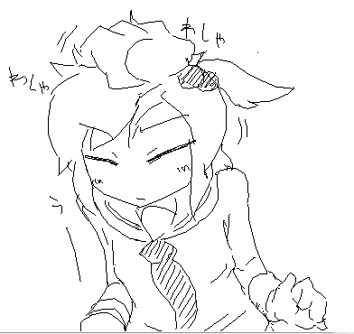 >> 01/06 23:27 きつねさんを出汁に使った蕎麦食べたい けものくさい >> 01/05 01:45 あけましておめでとうございます、噛まれ人です、新年のご挨拶が遅れてしまったようで、 最近の仕事が立て込んでいたもので、今年もよろしくお願い申し上げまし候。 あけました >> 01/05 07:32 あけおめことよろ！！！ ギミック楽しみヾ(ﾟωﾟ)ﾉ゛ こんなかんじになりました >> 01/05 22:48 夢日記帳にあった消えちゃった絵がまた見たいです＞＜ ああじゃあこんどあげとく >> 01/04 04:23 fox うむ >> 01/04 06:47 うぎゃう ぎゃうぎゃう >> 01/04 10:31 げいしゅん ゲイ >> 01/04 17:45 やったー圧☆殺だー いいよね >> 01/04 23:30 奈々さんでもワイヤーが切れた。 が、そんなことはどうでもいい！ ＨｏｍｅとかＰａｇｅｕｐとかおしてもなにも起こらない！ ｴｰ なんでじゃろ >> 01/03 15:14 あけおめ 三日遅れ？ははこまかいことは気にするｎ(ry o n a きにしない >> 01/03 21:44 まだなんとか三が日！ あけましておめでとうございます(*‘ω‘ ≡‘ω‘ *)！ お年玉ください！ 銃弾で良ければ >> 01/03 21:55 ひぃゃああああ！さきつねさんかわいいいい！！ 可愛いのは当然です！ >> 01/03 21:57 ＞めしは めしはまだですか そんなにおなかすいてるの？ すいてます >> 01/03 21:59 肉まんをにゅるんと吸い込むさきつねさんを幻視した。 肉まんは飲み物 >> 01/02 03:07 幽紀さんは特に、射撃コンボとの兼ね合いのせいか、 歩行停止ボタン使っていても上を押すとジャンプしちゃうんですよね～ ああなるほど，検討しておきます >> 01/02 03:24 ドン引きされること承知で白状します >もう一つ、蛙に頭から呑まれた時、うつ伏せ状態のモーションが他と違う 更に、この状態でHomeキーで蛙から離すと、何故か奈々の身体が分解した後に纏まる こんな所まで見つけた私は変態だろうか・・・？ 蛙の胃袋でもがく奈々たんを眺めたかった。 とりあえず直しておいた－ありがとー >> 01/02 10:30 明けましておめでとう御座います。(真) CrackleCradleの略称で、クラクレなんてどうです？(笑)。流行るといいな。 あの吊り天井が再登場ですか。懐かしいです・・・。(^^♪ あけおめー >> 01/02 10:34 「ありがとう あとごはんください 」 ・・・・・・・・・・・・・・・・・・・・・・・・・・・・・・・・・ ここはあえて、ご飯はあげない。(^^♪ なんだと >> 01/02 17:52 さがしものはなんですかー おっぱい じゃぁここにはない そこの乳ナイフに聞いて >> 01/02 22:28 あけおめことよろではさらば さらば >> 01/01 00:10 あけおめ！ ｶﾚｰは正義！ 今年もカレーはおいしいです >> 01/01 00:11 happy new year!!!!!!!! はぴー >> 01/01 00:11 とってもおいしそーなそばだー 美味しかった >> 01/01 00:32 年が明けたよ！やったねサキちゃん！ やったね！歳が増えるよ！ >> 01/01 00:42 あけましておめでとー。 来年本気だす いまを頑張ったものだけが >> 01/01 01:02 あけおめ！！ おめー >> 01/01 01:17 おめでとう これからも頑張ってくだしあ そしてスナイパーな俺は祝う片手間に1get おせえ >> 01/01 01:23 溶鉱炉にスクラップ・・・ターミネーターですね おでんでんででん >> 01/01 01:29 バンザイで拘束する敵は増えませんか？涼子さんの腋をもっと見たいです ベアハッグ系も入れる予定 >> 01/01 02:33 3-3プレイ 最後に到達した時ゆうきさんは頭が無くて真っ黒こげであった ひどい >> 01/01 02:59 今更だけどあけおめです～ 今年もよろしくリョナがいしま～（You Are Dead よりょー >> 01/01 03:27 CCステージ3は明らかに人間がつい最近までいたであろう場所だ。 涼子たちが金庫から宝を盗んでいたし、自動ドアなどの設備も生きていた。 金庫を利用していた人がいたはずだ。 となると、ロボットや鉄串は警備システムといったところだろうか。 しかしピアノ線は… あれも警備システムの一種で、簡単に出し入れてきるんだろうか？ そうだとしても生物兵器は？ 1匹だけ徘徊していたλさんが気になる… うふふ ふふ >> 01/01 09:14 あけましておめでとう 新年早々プレス機ですかい こう何かリーゼントとかが挟まってしまって 逃げるに逃げられない恐怖ががが HONDA! >> 01/01 10:43 明けましておめでとうございます。今年もよろしくお願いします ころよろー >> 01/01 13:54 CC完成するまでダウンロードしないって決めた！ けどみんなの拍手見てたらやりたくなっちゃたよおをおっをおおおを 好きなものは最初と真ん中と最後に分けて食べる派の私 合理的！ >> 01/01 16:56 サキツネさんが、制服姿で機関銃を乱射して「汚物は消毒だー！！」って叫びながらパトカーを破壊してる画像をください。 なにその照英みたいな >> 01/01 17:12 １，２，３、ドゥアー！ ﾄﾞｩｱｰ >> 01/01 17:19 あけましておめでとうございます おめで >> 01/01 17:58 リョナラーにもいろいろあるけれど、じっくりゆっくり死なないように大事に苦しめるのが私は素敵だと思うのです。 さきつねさんはどうでしょう？ 即死は即死の良さがある 痛めつけは痛めつけの良さがある 必要に応じてどちらも活用するのがだいじ >> 01/01 18:35 あけたー ことよろしゅう 拍手コメみていつも思うんだが皆何故そんなにバグを見つけ出せるんだ… これじゃ俺がただ通しでゲームオーバーも楽しまず普通にプレイしてるだけだと思われてしまうじゃないか！ なんて（＊ ‘ω ‘＊） 楽しんでくれると嬉しい >> 01/01 18:36 孕ませはまだですか(´･ω･) それはない いやまぁ蜂さんはいるかも >> 01/01 22:06 よそ見した瞬間に年越しそば消滅フラグ(笑) 器goto！ >> 01/01 23:58 謹賀新年 明けましておめでとうございました あけました！ -----2012/01/01----- 今年もはじまってしまった！ よろしくねー そして現在は3-4のギミック制作ちゅー 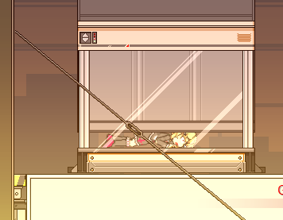 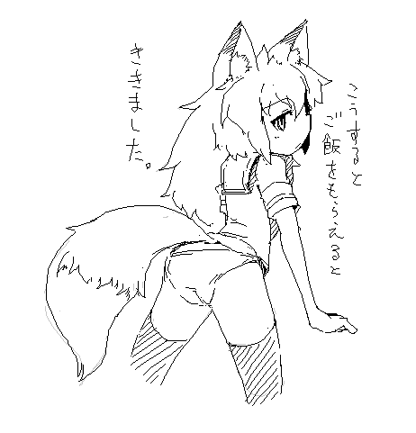 >> 01/01 00:00 今年もさきさんのところに誰よりも早くメッセージを送るのはこの私なのだ！！ ガハハ、まったく正月たならんわ！！ あおけめ！！ いちばんのりおめ >> 01/01 00:03 あけおめー きっと１０位以内のコメだな ２番めおめ >> 12/31 00:14 ﾄｼｺｼﾀﾞｰ というわけでカレーをあげよう カレーそば！ >> 12/31 00:21 thank you >> 12/31 00:22 ice please thank you アイス！ >> 12/31 03:14 年明け更新か大晦日更新か 年明けに大晦日更新 >> 12/31 16:30 http://wiki.livedoor.jp/ryonaita_2/d/CrackleCradle%b9%b6%ce%ac どうですか！？驚いちゃいましたか！？ よく出来てる(*‘ω‘ *) ただ２９日配布版はあくまですてかむだけだから一応注意．別になおさんでもいいけど(*‘ω‘ *) >> 12/31 16:44 おちんちん そうかなにいってんだお前 >> 12/31 20:07 少し早いがあけおめ！ 来年もよろしくお願いします 来年もｶﾚｰｳﾏｼ（*‘ω‘*） よろしーく >> 12/31 21:07 WAR WAR WAR 時には起こせよムーヴメント！！ 自分で動き出さなきゃ >> 12/30 06:30 CCコントローラ操作について、方向キー上でジャンプしたり、 方向キー下で床から降りたりするので、上下の射撃がやりにくいんですよね。 頭上の爆弾を撃とうとしてジャンプして自爆すること多々。 ジャンプはジャンプボタンのみで行い、 段差降りは↓+ジャンプボタンなどで行ったほうがやりやすいと思いますがいかがですか？ >> 12/30 15:31 CCコントローラ操作について、左スティックで腕の方向、つまり射撃の方向を操作できるようになりませんか？ あるいは、せめてコントローラ+マウス操作を併用できるようになると、敵をうまいこと狙撃できるのでやりやすいと思います。 キャラ固定ボタンでもだめ？ >> 12/30 17:14 ゆう子さんだと思ったら、ゆうきさんでした、ごめんなさい＞＜ まれによくある >> 12/30 20:20 CCのわにさんで、こんな演出があったらいいなという提案 ・噛み砕かれたときに口の間から血が吹き出る ・噛まれたとき口の間から手または足だけが見える演出 ・そのまま噛み千切られて手や足だけが転がり落ちる ・胴体から上（下）だけ噛み千切られ分離 悪くない ただまぁいまは先に進むタイムなのだ >> 12/30 20:24 あと、せっかく体力が無くても抵抗力があれば動けるという仕様があるのに、 その動作はあえて体力を減らしたうえで抵抗力の回復を待って死なないと見られないので いっそのこと、死んだら一度、抵抗力がMAXになるのとかどうでしょう。 もう助からない系の演出好きなので。そのまま静かに失血死するのもいいですね。 んーまぁあれは意図的にあのくらいにはしてある >> 12/30 21:56 火炎放射機だろうがマシンガンだろうが知ったことか！突っ走るぜ！うぉおおおお！サクッ (´・ω・｀)・・・・・引っかかっちまったぜ ｻｸｻｸ！ >> 12/30 22:17 スライムを究極合体させて吸い込まれたところ、奇妙な動きをして、最終的に奈々ちゃんがコンパクトに折りたたまれました。 ごめんミスってた(*‘ω‘ *) >> 12/29 02:01 CCにもお馴染みのバネトラップがありますが、 BBでできた涼子さんの隠し技ハイジャンプはできないんですね。 まぁ今のCCのマップでハイジャンプが役立つ箇所は無さそうですが･･･ バネトラップの回避くらいはできそうですよね。 実装の予定はあるんです？ あるっちゃある >> 12/29 18:07 ゆうこさんのバグ ニュートラル射撃→前射撃→以後、ニュートラル射撃連打 この操作をすると片足で立ちその場で射撃を繰り返すが、このとき 射撃ボタンを高速連打すると銃の回転が遅くなり、射撃もしなくなる。 この"その場片足射撃"はタイミングよくボタンを押すことで 通常の連射より速く連射ができるため、何かの役に立つかもしれない。 ふむ あのへんは自分でもよくわからんことになってるからなー >> 12/29 18:09 ワニに食われると、わにの腹から血が吹き出ることがあるのは 腹の中で彼女らが抵抗した結果みたいなあれですか？ かも知れないしバグなのかも知れない >> 12/29 21:19 銃といえばBBでは奈々さんが一手に担ってたけど、 ゆうこちゃんにお株を奪われちゃったな～。 しかしモーションからしてバズーカみたいな重火器は似合わないだろうし、どういう住み分けをしていくんだろう？ 奈々ちゃんは無駄な動きはせず最低限の動きで、って感じだから ライフルとかグレネードランチャーみたいな落ち着いて使う武器が似合いそう。 裕子さんは踊りながら戦うようなもんだから、取り回しのきく武器… サブマシンガンとかが似合うかな？他に思い浮かばないけど。 いずれ涼子さんの日本刀も誰かに奪われるのかな～ まあ追々特殊武器もいれてくー >> 12/29 23:09 ｷｭｲｰﾝｽﾞﾄﾞﾄﾞﾄﾞﾄﾞﾄﾞﾄﾞ ｷｨｨｨﾝ･･･ｶﾞｶﾞｶﾞｶﾞｶﾞｶﾞｶﾞ ｷｨｨｨｨﾝ >> 12/29 23:10 ＞こうするとご飯をもらえるとききました よかろう！ 私のフランクフルトとおいなりさんを食べる権利をやろう ﾌﾞﾁｨ >> 12/28 10:24 よしカレーのルーをあげよう ご飯はパンツと交換だ 知らない人のブリーフですがどうぞ >> 12/28 17:06 白状します。 実は今までクラックルクレイドルもブランクブラッドCG集もダウンロードしていませんでした。 でも今ダウンロードしたので、許してください。 許した >> 12/28 21:47 ゆうこりんの背面打ちの条件が分からぬ…同じコマンドでやっていても、できるときとできないときがあるね （できる時は簡単にできるし、できないときはどうやってもできない）。 背面打ちは仕様なんですよね。 ゆうこりんが背後の敵をわざわざ振り向いてから打つとは思えませんもん。 仕様かもしれない >> 12/27 04:04 はじめましていつも見させてもらってます いきなりですがCCの最新バージョンでのバグを見つけました（既出かもしれませんが） 奈々で最大級のスライムに攻撃受けると、奈々の挙動がおかしくなり体力がなくなると全身がバラバラみたいになります。 言葉ではわからないかもしれません、またはそのバグが起きてるのは自分だけかもしれません。 とりあえずそのことで少しモヤモヤしてたので報告しておきます。 うむミスってた >> 12/27 08:46 幽紀さんのショットガンでワイヤーきれるのに奈々さんの拳銃できれないのは仕様？ 当たってないだけかも >> 12/27 11:53 またりんこちゃんさんの入れ知恵か・・・ 後ろにしょってる食料？はははなんのこ（ryona mogmog >> 12/26 19:13 もんむすの前編と中篇の体験版をプレイしてみた 意外と面白いな!! よく出来てるよねー >> 12/26 23:02 ご飯は無いけどワシの特濃ミルクをあげよう しっかり味わうんじゃぞ ご飯に牛乳は合いづらいですね >> 12/26 23:12 チートのやり方がわからんです… Readme嫁 >> 12/25 01:44 BB、CC、面白いです。一年以上休止状態だったリョナラー魂が復活しました(笑)。 有難うございます。 幽紀さん、可愛いなあ。でも、奈々ちゃんが一番好きですね。 罠で、地雷なんてどうですか？ 足が吹っ飛ぶなんて、とてもいいと思います(笑) いいね >> 12/25 03:07 CrackleCradleの串刺しされた時の刺さり方が変わりました？ ふえた >> 12/25 03:08 溶鉱炉の雰囲気いいですね！！！ なんか新しい罠が欲しいかも・・・。 うむ >> 12/25 16:17 パンツに釣られて近付いた者を捕食するのか！ でんたーた！ >> 12/25 20:46 いつもさきさんにしつもんをしているものですが、このあいだはわたしの勝手なリクエストにこたえてもらい、ほんとうにほんとうにありがとうございました。さきさんどうもありがとうございました あとばらいで奈々さんにサテライトキャノンを2012丁程あげませう でもじつはさがしてもさがしても 画像がみつからなかったと言う 悲劇 （´・ω・`）.;:…（´・ω...:.;::..（´・;::: .:.;: どういうことなの >> 12/25 23:28 遅くなったけどさきさんメリークリスマス！ くりー >> 12/25 23:33 メリークリスマスだったんだよさきつねさん(*‘ω‘ *) だったねー >> 12/24 00:02 メリークリスマス！！ こんなことを言うのは俺くらいだなきっと プレゼントはありません(*‘ω‘ *) >> 12/24 00:43 (*´ω｀*) (*‘ω‘ *) >> 12/24 23:35 こっそり応援してます ｜ω・）ﾉｼ ｜ω‘ *) >> 12/23 04:05 リョナとかグロとか苦手どころかトラウマだったのにさきつねさんのせいで目覚める直前まで行きました 責任取ってください 直前かよ！ >> 12/23 14:04 杭の特殊DEAD嬉しすぎる うむ >> 12/23 20:13 下のお口にポッキーをあげようフフフ 尿道 >> 12/23 23:55 ななさんはいいこえでなく もう少し儚げでもいいかもしれん >> 12/22 01:53 そのケツにキックをしろという事ですね、わかります いてえ >> 12/22 02:33 巴子さんは！巴子さんはCCに出ないんですか！敵キャラとして！！！ ちょっとあわんのう >> 12/22 03:50 CrackleCradleの声追加感謝感激雨霰！！！！ ボイスあるだけで結構変わりますねぇ・・・。めっちゃ楽しい！！ ありがとー >> 12/22 05:34 最近きつねさんがどんどんあざとくなってきている･･･とりあえず肉まんをあげませう つぎはまだですか >> 12/22 09:13 TOPのきつねさんがえろいです。おしりをなでてもいいですか なでてもいいがめしはまだですか >> 12/22 10:41 CrackleCradle の涼子の前倒れは尻突き上げのがよかった（チラ かんがえとく >> 12/22 15:31 ライクライクみたいなのから命からがら這いでた奈々さんが0.1秒後に颯爽と現れたクラゲにさらわれていった なんという野生の王国 ふふ >> 12/22 17:52 お、CrackleCradle更新だ。お疲れ様です。 どうもー >> 12/22 18:10 ぜひ天井の染みを数える仕事もやってみないかね！ 入院ですか >> 12/21 00:11 もんむすって前章と中章合わせると売り上げ金が5千万行ってるのよ すごいなー >> 12/21 06:00 感電→失禁！感動 うむ あんまりわざとらしいのは好かんけどね >> 12/21 14:40 3-3の最後まで行った・・・ ボス戦楽しみにしてます I'll be back. 【Game Over...Press Restart Key】 (*‘ω‘ *)ｂ >> 12/21 16:17 バグ？発見しましたのでご報告します 奈々を操作している時、スライムににゃんにゃんされる時のモーションがオカシイ 更に、ゲームオーバー後、何故か奈々の身体が分解した後に纏まる もう一つ、蛙に頭から呑まれた時、うつ伏せ状態のモーションが他と違う 更に、この状態でHomeキーで蛙から離すと、何故か奈々の身体が分解した後に纏まる ごめんようなおす >> 12/21 20:11 三人の特徴の違うキャラクターがいるので、これから先のステージで 『特定のキャラしか進入出来ない分岐』とか出来たりするんでしょうか？ たとえば、奈々さんでしか狙えない射程にある施錠された扉の開放装置とか、 涼子さんの壁ジャンプでしか辿り着けない段差の通路とか、 幽紀さんの二段ジャンプ＋散弾銃ジャンプでしかたどり着けない場所の通路とか… 仲は悪いけど結局最後は全員で力を合わせて鍵を解除しないと脱出出来ない…みたいなハートフルストーリーとか… そういうのは考えていなくもない >> 12/21 21:49 ボイス付き…だと…サキさんは本気で我々を萌やして焼き尽くすつもりらしい 声は良いね >> 12/21 22:34 おじさんの魚肉ソーセージをあげよう スーパーＢｏｏを要求します >> 12/21 22:44 久しぶりに蛙さんと戯れていたら粘液しか食らってないのに奈々さんが血みどろになっていった あれか 消化液みたいなものか あるある >> 12/21 22:45 このさきつねさんの目が好きです じー >> 12/20 00:42 サキさん…あんた、トラップの配置を微妙に変えたね？ うふふ >> 12/20 04:01 つ たまごかけごはん おいしいよね >> 12/20 14:37 CC 3-3わっしょい！ 地面から生えてくる杭の刺さり方が増えた！ えろい 本当にえろい とある絵描きさんのを参考に作りました >> 12/20 16:08 見ろ!!!!!!これが1getだッ!!!!!! (*‘ω‘ *) >> 12/20 16:15 声で思い出したけど 声が出ない頃のCCのファイルのなかに 声のファイルがあったんだが… 仮にはもう実装してたのよ >> 12/20 16:19 さきさんはおにゃのこなのですか？ どうなんでしょう？ >> 12/20 17:31 >こうするとご飯をもらえるとききました。 そりゃおかずをもらったならご飯を差し出すしかないじゃない ごちそうさま >> 12/20 18:07 声きたああああああああああああ！！！ ああああ >> 12/20 18:34 情報を鵜呑みにする狐さん。狐さんは食い物のこととなると見境が無いわねぇ。 めしは めしはまだですか >> 12/20 20:33 さっきページが開けなかったが・・・ まさか！？ >> 12/20 20:33 いや・・・まさかなｗ (*‘ω‘ *)？ >> 12/20 20:48 わしゃわしゃ(*´∀｀)っ(*‘ω‘ *) ミ*‘ω‘ *ミ >> 12/20 20:48 更新お疲れ様です鯛！ もんすたーは人気ですよね 個人的にも好きだな・・・ センサーガトリングはなしかOTL 今日もｶﾚｰｳﾏｽ ｶﾚｰﾏｳｽ！ >> 12/20 20:52 ほっぺたぷにぷに(*´∀｀)σ(*‘ω‘ *) ぶよん >> 12/20 21:56 ４面は生き物ステージと聞きました ＢＢで出てきたヘビさんは出てくるんでしょうか？ 拘束→締め上げる→体力奪う→もがく力がなくなる→更に締め上げる→ の絶望的なシチュエーションが大好きだったのですが 生物ステージにて(*‘ω‘ *) >> 12/20 22:02 生卵をお椀に割り入れて、醤油少し垂らして かき混ぜてから飲む。 意外と美味しい。 ふむ ご飯はないのです？ >> 12/20 22:30 よしさきつねさん、ラーメン食べに行こうか。ミニスカ穿いてからな。 ラーメンいいよね >> 12/20 22:45 すかーとをはいたままたくしあげてくれればふかひれをあげちゃう ﾊﾞｯ >> 12/19 00:05 クラゲの人です、透明ぽくなってて僕、満足！ あとStage2の入り口の針はお見通しだったぜ！ARIGATOU! ﾁｯ >> 12/19 00:40 まいどー( ´∀｀)∩ 3-3お疲れ様ッスー ありがとー >> 12/19 00:59 でもその後、前より透明に気がするけどどれくらい透明になったか気になったんだ で、前バージョンのをおとしてくらげさんに捕まってみたんだ 色が同じだったよ・・・・ つまり俺の目がどうかしてたんだuwaaaaaaa ｸｽｸｽ >> 12/19 02:24 ご飯・・・そうだね、白いのすぐあげようね・・・（ｶﾁｬｶﾁｬ (‘ω‘ ) >> 12/19 02:26 >きつねさんで昔作った マジか - - - マジか。 大事なことなので２回（略 昔陵辱されたきつねさんが今はこんなに健気に振舞ってるかと思うと興奮してきたのでなんとか再販してくだしあ。まる。 DLにあるよ？ >> 12/19 10:29 ついに、さきつねさんの下着が明らかに！ 以前、「上はスポーツブラ的なもの」でしたから、今回のも含めてさきつねさんは、 「上はスポブラ、下は純白のパンツー」ですね！ 納得♪(*‘ω‘ *) そんな感じかも知れない >> 12/19 16:29 CC新エリア素晴らしいですわぁ マップチップからはあの世界は想像できなかったｗ ３ボスは炎属性とみた！間違いない！ どうなんでしょう >> 12/19 16:42 Ｖｏｉｃｅ導入ｋｔｋｒ！これで勝つる！ リトライＲキー RRR >> 12/19 16:46 1get争奪戦会場はここでしょうか どこでしょうか >> 12/19 17:08 最新版早速やりました！声えろす。そして串刺し時の演出がたまんねぇぜヒャッハー！ あと2－1で人食い花さんに頭パックンチョされた後でhomeボタン押したら涼子さんがデュラハン状態で復活して首から血の噴水撒き散らしながら走りだしてﾜﾛﾀ Homeはあくまでチートですし… >> 12/19 23:25 good job Thx >> 12/19 23:25 =。= *‘ω‘ * >> 12/18 16:43 CrackleCradle 3-3キター！ 万歳ー！万歳ー！万歳ー！万歳ー！万歳ー！万歳ー！万歳ー！万歳ー！ ざいばーん >> 12/18 19:48 「こうするとご飯をもらえると聞きました」 よし、さあやろう。ほらほらこっちだよ(ちらつかせながら後ろへ) それは残像だ >> 12/18 21:14 CC来たーと思ったら、大スライムの挙動がおかしい様な？窒息するかと思ったら畳まれてしまったでござる。 ごめんなおすー >> 12/18 22:47 新しいのが公開されるたびに１面からやりなおしてるんですが、もしかしてデータファイルを移し変えたら続きからできたりしちゃったり・・？しま・・？す・・？ す >> 12/18 23:24 おい！誰だよステージ２の最初にこっそり罠追加したのは！ ちょっとビクッてなったじゃないか ｸｽｸｽ